<!DOCTYPE html>


  


<html class="theme-next muse use-motion" lang="">
<head><meta name="generator" content="Hexo 3.8.0">
  <!-- hexo-inject:begin --><!-- hexo-inject:end --><meta charset="UTF-8">
<meta http-equiv="X-UA-Compatible" content="IE=edge">
<meta name="viewport" content="width=device-width, initial-scale=1, maximum-scale=1">
<meta name="theme-color" content="#222">


<meta http-equiv="Cache-Control" content="no-transform">
<meta http-equiv="Cache-Control" content="no-siteapp">


  
  
  <link href="/blog/lib/fancybox/source/jquery.fancybox.css?v=2.1.5" rel="stylesheet" type="text/css">


<link href="/blog/lib/font-awesome/css/font-awesome.min.css?v=4.6.2" rel="stylesheet" type="text/css">

<link href="/blog/css/main.css?v=5.1.4" rel="stylesheet" type="text/css">


  <link rel="apple-touch-icon" sizes="180x180" href="/blog/images/apple-touch-icon-next.png?v=5.1.4">


  <link rel="icon" type="image/png" sizes="32x32" href="/blog/images/favicon-32x32-next.png?v=5.1.4">


  <link rel="icon" type="image/png" sizes="16x16" href="/blog/images/favicon-16x16-next.png?v=5.1.4">


  <link rel="mask-icon" href="/blog/images/logo.svg?v=5.1.4" color="#222">


  <meta name="keywords" content="算法,">


<meta name="description" content="名词 大O表示法：指代码执行时间随数据规模增长的变化趋势，所以，也叫作渐进时间复杂度，简称时间复杂度。 空间复杂度：空间复杂度全称就是渐进空间复杂度，表示算法的存储空间与数据规模之间的增长关系。 平均时间复杂度：即加权平均时间复杂度或者期望时间复杂度。 均摊时间复杂度：就是一种特殊的平均时间复杂度，看是否能将较高时间复杂度那次操作的耗时，平摊到其他那些时间复杂度低的情况上。  时间复杂度分析 只">
<meta name="keywords" content="算法">
<meta property="og:type" content="article">
<meta property="og:title" content="数据结构与算法">
<meta property="og:url" content="https://angelteng.github.io/blog/2018/12/10/数据结构与算法/index.html">
<meta property="og:site_name" content="Code war of Angel">
<meta property="og:description" content="名词 大O表示法：指代码执行时间随数据规模增长的变化趋势，所以，也叫作渐进时间复杂度，简称时间复杂度。 空间复杂度：空间复杂度全称就是渐进空间复杂度，表示算法的存储空间与数据规模之间的增长关系。 平均时间复杂度：即加权平均时间复杂度或者期望时间复杂度。 均摊时间复杂度：就是一种特殊的平均时间复杂度，看是否能将较高时间复杂度那次操作的耗时，平摊到其他那些时间复杂度低的情况上。  时间复杂度分析 只">
<meta property="og:locale" content="default">
<meta property="og:image" content="https://angelteng.github.io/blog/2018/12/10/数据结构与算法/0.png">
<meta property="og:image" content="https://angelteng.github.io/blog/2018/12/10/数据结构与算法/1.png">
<meta property="og:image" content="https://angelteng.github.io/blog/2018/12/10/数据结构与算法/2.png">
<meta property="og:image" content="https://angelteng.github.io/blog/2018/12/10/数据结构与算法/3.png">
<meta property="og:image" content="https://angelteng.github.io/blog/2018/12/10/数据结构与算法/4.png">
<meta property="og:image" content="https://angelteng.github.io/blog/2018/12/10/数据结构与算法/5.png">
<meta property="og:image" content="https://angelteng.github.io/blog/2018/12/10/数据结构与算法/6.png">
<meta property="og:image" content="https://angelteng.github.io/blog/2018/12/10/数据结构与算法/7.png">
<meta property="og:image" content="https://angelteng.github.io/blog/2018/12/10/数据结构与算法/8.png">
<meta property="og:image" content="https://angelteng.github.io/blog/2018/12/10/数据结构与算法/9.png">
<meta property="og:image" content="https://angelteng.github.io/blog/2018/12/10/数据结构与算法/10.png">
<meta property="og:image" content="https://angelteng.github.io/blog/2018/12/10/数据结构与算法/11.png">
<meta property="og:image" content="https://angelteng.github.io/blog/2018/12/10/数据结构与算法/12.png">
<meta property="og:image" content="https://angelteng.github.io/blog/2018/12/10/数据结构与算法/13.png">
<meta property="og:image" content="https://angelteng.github.io/blog/2018/12/10/数据结构与算法/14.png">
<meta property="og:image" content="https://angelteng.github.io/blog/2018/12/10/数据结构与算法/15.png">
<meta property="og:image" content="https://angelteng.github.io/blog/2018/12/10/数据结构与算法/16.png">
<meta property="og:image" content="https://angelteng.github.io/blog/2018/12/10/数据结构与算法/17.png">
<meta property="og:image" content="https://angelteng.github.io/blog/2018/12/10/数据结构与算法/18.png">
<meta property="og:image" content="https://angelteng.github.io/blog/2018/12/10/数据结构与算法/19.png">
<meta property="og:image" content="https://angelteng.github.io/blog/2018/12/10/数据结构与算法/20.png">
<meta property="og:image" content="https://angelteng.github.io/blog/2018/12/10/数据结构与算法/21.png">
<meta property="og:image" content="https://angelteng.github.io/blog/2018/12/10/数据结构与算法/22.png">
<meta property="og:image" content="https://angelteng.github.io/blog/2018/12/10/数据结构与算法/23.png">
<meta property="og:image" content="https://angelteng.github.io/blog/2018/12/10/数据结构与算法/24.png">
<meta property="og:image" content="https://angelteng.github.io/blog/2018/12/10/数据结构与算法/25.png">
<meta property="og:image" content="https://static001.geekbang.org/resource/image/44/ad/4480a314f9d83c343b8adbb28b6782ad.jpg">
<meta property="og:image" content="https://static001.geekbang.org/resource/image/04/12/04650d9470b1e67899f5b8b7b8e33212.jpg">
<meta property="og:image" content="https://static001.geekbang.org/resource/image/a6/c3/a6c4c347b7cbdf57662bab399ed36cc3.jpg">
<meta property="og:image" content="https://static001.geekbang.org/resource/image/48/4e/48e3bd2cdd66cb635f8a4df8fb8fd64e.jpg">
<meta property="og:image" content="https://static001.geekbang.org/resource/image/b9/29/b93c1fa4de16aee5482424ddf49f3c29.jpg">
<meta property="og:image" content="https://static001.geekbang.org/resource/image/ac/91/ac76d78c064a2486e2a5b4c4903acb91.jpg">
<meta property="og:image" content="https://static001.geekbang.org/resource/image/ec/ec/eca118d673c607eb2b103f3476fb24ec.jpg">
<meta property="og:updated_time" content="2019-06-17T09:59:13.000Z">
<meta name="twitter:card" content="summary">
<meta name="twitter:title" content="数据结构与算法">
<meta name="twitter:description" content="名词 大O表示法：指代码执行时间随数据规模增长的变化趋势，所以，也叫作渐进时间复杂度，简称时间复杂度。 空间复杂度：空间复杂度全称就是渐进空间复杂度，表示算法的存储空间与数据规模之间的增长关系。 平均时间复杂度：即加权平均时间复杂度或者期望时间复杂度。 均摊时间复杂度：就是一种特殊的平均时间复杂度，看是否能将较高时间复杂度那次操作的耗时，平摊到其他那些时间复杂度低的情况上。  时间复杂度分析 只">
<meta name="twitter:image" content="https://angelteng.github.io/blog/2018/12/10/数据结构与算法/0.png">


<script type="text/javascript" id="hexo.configurations">
  var NexT = window.NexT || {};
  var CONFIG = {
    root: '/blog/',
    scheme: 'Muse',
    version: '5.1.4',
    sidebar: {"position":"left","display":"post","offset":12,"b2t":false,"scrollpercent":false,"onmobile":false},
    fancybox: true,
    tabs: true,
    motion: {"enable":true,"async":false,"transition":{"post_block":"fadeIn","post_header":"slideDownIn","post_body":"slideDownIn","coll_header":"slideLeftIn","sidebar":"slideUpIn"}},
    duoshuo: {
      userId: '0',
      author: 'Author'
    },
    algolia: {
      applicationID: '',
      apiKey: '',
      indexName: '',
      hits: {"per_page":10},
      labels: {"input_placeholder":"Search for Posts","hits_empty":"We didn't find any results for the search: ${query}","hits_stats":"${hits} results found in ${time} ms"}
    }
  };
</script>


  <link rel="canonical" href="https://angelteng.github.io/blog/2018/12/10/数据结构与算法/">


  <title>数据结构与算法 | Code war of Angel</title><!-- hexo-inject:begin --><!-- hexo-inject:end -->
  


</head>

<body itemscope="" itemtype="http://schema.org/WebPage" lang="default">

  
  
    
  

  <!-- hexo-inject:begin --><!-- hexo-inject:end --><div class="container sidebar-position-left page-post-detail">
    <div class="headband"></div>

    <header id="header" class="header" itemscope="" itemtype="http://schema.org/WPHeader">
      <div class="header-inner"><div class="site-brand-wrapper">
  <div class="site-meta ">
    

    <div class="custom-logo-site-title">
      <a href="/blog/" class="brand" rel="start">
        <span class="logo-line-before"><i></i></span>
        <span class="site-title">Code war of Angel</span>
        <span class="logo-line-after"><i></i></span>
      </a>
    </div>
      
        <p class="site-subtitle"></p>
      
  </div>

  <div class="site-nav-toggle">
    <button>
      <span class="btn-bar"></span>
      <span class="btn-bar"></span>
      <span class="btn-bar"></span>
    </button>
  </div>
</div>

<nav class="site-nav">
  

  
    <ul id="menu" class="menu">
      
        
        <li class="menu-item menu-item-home">
          <a href="/blog/" rel="section">
            
              <i class="menu-item-icon fa fa-fw fa-home"></i> <br>
            
            Home
          </a>
        </li>
      
        
        <li class="menu-item menu-item-archives">
          <a href="/blog/archives/" rel="section">
            
              <i class="menu-item-icon fa fa-fw fa-archive"></i> <br>
            
            Archives
          </a>
        </li>
      

      
    </ul>
  

  
</nav>


 </div>
    </header>

    <main id="main" class="main">
      <div class="main-inner">
        <div class="content-wrap">
          <div id="content" class="content">
            

  <div id="posts" class="posts-expand">
    

  

  
  
  

  <article class="post post-type-normal" itemscope="" itemtype="http://schema.org/Article">
  
  
  
  <div class="post-block">
    <link itemprop="mainEntityOfPage" href="https://angelteng.github.io/blog/blog/2018/12/10/数据结构与算法/">

    <span hidden itemprop="author" itemscope="" itemtype="http://schema.org/Person">
      <meta itemprop="name" content="Angel Teng">
      <meta itemprop="description" content="">
      <meta itemprop="image" content="https://angelteng.github.io/blog/images/angel.jpg">
    </span>

    <span hidden itemprop="publisher" itemscope="" itemtype="http://schema.org/Organization">
      <meta itemprop="name" content="Code war of Angel">
    </span>

    
      <header class="post-header">

        
        
          <h1 class="post-title" itemprop="name headline">数据结构与算法</h1>
        

        <div class="post-meta">
          <span class="post-time">
            
              <span class="post-meta-item-icon">
                <i class="fa fa-calendar-o"></i>
              </span>
              
                <span class="post-meta-item-text">Posted on</span>
              
              <time title="Post created" itemprop="dateCreated datePublished" datetime="2018-12-10T11:14:50+08:00">
                2018-12-10
              </time>
            

            

            
          </span>

          
            <span class="post-category">
            
              <span class="post-meta-divider">|</span>
            
              <span class="post-meta-item-icon">
                <i class="fa fa-folder-o"></i>
              </span>
              
                <span class="post-meta-item-text">In</span>
              
              
                <span itemprop="about" itemscope="" itemtype="http://schema.org/Thing">
                  <a href="/blog/categories/后端/" itemprop="url" rel="index">
                    <span itemprop="name">后端</span>
                  </a>
                </span>

                
                
              
            </span>
          

          
            
          

          
          

          

          

          

        </div>
      </header>
    

    
    
    
    <div class="post-body" itemprop="articleBody">

      
      

      
        <p>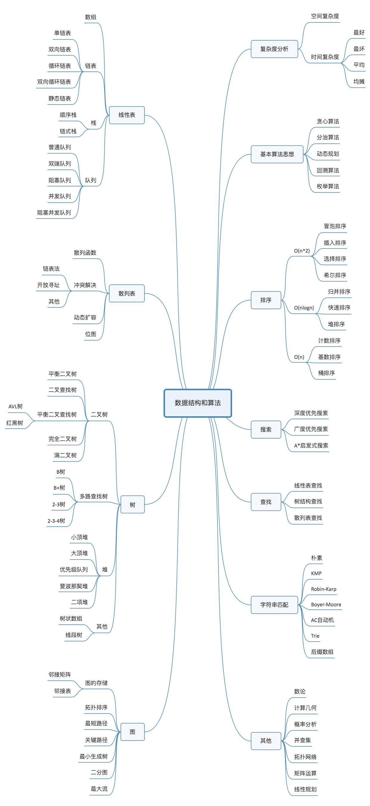</p>
<h4 id="名词"><a href="#名词" class="headerlink" title="名词"></a>名词</h4><ul>
<li>大O表示法：指代码执行时间随数据规模增长的变化趋势，所以，也叫作渐进时间复杂度，简称时间复杂度。</li>
<li>空间复杂度：空间复杂度全称就是渐进空间复杂度，表示算法的存储空间与数据规模之间的增长关系。</li>
<li>平均时间复杂度：即加权平均时间复杂度或者期望时间复杂度。</li>
<li>均摊时间复杂度：就是一种特殊的平均时间复杂度，看是否能将较高时间复杂度那次操作的耗时，平摊到其他那些时间复杂度低的情况上。</li>
</ul>
<h4 id="时间复杂度分析"><a href="#时间复杂度分析" class="headerlink" title="时间复杂度分析"></a>时间复杂度分析</h4><ol>
<li>只关注循环执行次数最多的一段代码</li>
<li>加法法则：总复杂度等于量级最大的那段代码的复杂度</li>
<li>乘法法则：嵌套代码的复杂度等于嵌套内外代码复杂度的乘积</li>
</ol>
<h4 id="书单"><a href="#书单" class="headerlink" title="书单"></a>书单</h4><p>入门</p>
<ul>
<li>《大话数据结构》</li>
<li>《算法图解》<br>不同编程语言</li>
<li>《数据结构与算法分析：JavaScript(/Python/..)语言描述》<br>经典</li>
<li>《算法》</li>
<li>《算法导论》<br>殿堂级</li>
<li>《计算机程序设计艺术》<br>面试</li>
<li>《编程之美》</li>
<li>《剑指offer》</li>
<li>《编程珠玑》<br>闲暇</li>
<li>《数学之美》</li>
<li>《算法之美》</li>
<li>《算法帝国》</li>
</ul>
<h4 id="数组"><a href="#数组" class="headerlink" title="数组"></a>数组</h4><p>数组（Array）是一种线性表数据结构。它用一组连续的内存空间，来存储一组具有相同类型的数据。<br>最大的特点就是支持随机访问，但插入、删除操作也因此变得比较低效，平均情况时间复杂度为 O(n)，根据下标随机访问的时间复杂度为 O(1)。</p>
<h4 id="链表"><a href="#链表" class="headerlink" title="链表"></a>链表</h4><p>链表不需要一块连续的内存空间，它通过“指针”将一组零散的内存块串联起来使用。其中，把内存块成为“结点”</p>
<ul>
<li>单链表：每个链表的结点除了存储数据之外，还需要记录链上的下一个结点的的地址（即后续指针 next）<br>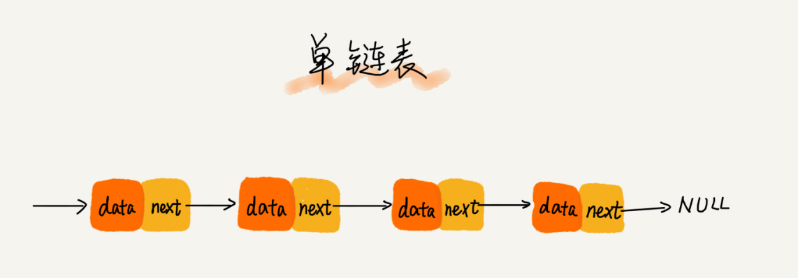<br>头结点记录了链表的基地址，尾节点的指针指向Null空地址。</li>
<li>循环链表：与单链表区别是，尾节点的指针指向头节点。</li>
<li>双向链表：每个结点不止有一个后继指针 next 指向后面的结点，还有一个前驱指针prev指向前一个节点。</li>
</ul>
<h5 id="链表数组性能对比"><a href="#链表数组性能对比" class="headerlink" title="链表数组性能对比"></a>链表数组性能对比</h5><p>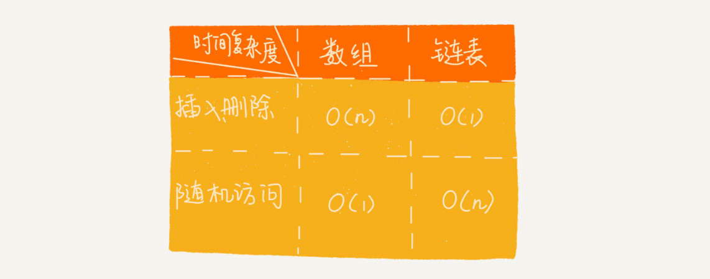</p>
<ul>
<li>数组使用连续内存空间，可以借助cpu缓存机制，进行预读。<br>[CPU缓存机制]CPU在从内存读取数据的时候，会先把读取到的数据加载到CPU的缓存中。而CPU每次从内存读取数据并不是只读取那个特定要访问的地址，而是读取一个数据块(这个大小我不太确定。。)并保存到CPU缓存中，然后下次访问内存数据的时候就会先从CPU缓存开始查找，如果找到就不需要再从内存中取。这样就实现了比内存访问速度更快的机制，也就是CPU缓存存在的意义:为了弥补内存访问速度过慢与CPU执行速度快之间的差异而引入。</li>
<li>数据缺点是大小固定，而链表天然支持动态扩容。</li>
</ul>
<h5 id="基于链表LRU缓存淘汰策略"><a href="#基于链表LRU缓存淘汰策略" class="headerlink" title="基于链表LRU缓存淘汰策略"></a>基于链表LRU缓存淘汰策略</h5><ul>
<li>维护一个有序单链表，越靠近尾部节点是越早之前访问</li>
<li>插入数据（新增），缓存未满，将数据插入链表头部</li>
<li>插入数据（已有），缓存未满，将改数据从原来节点迁移到头部节点</li>
<li>插入数据（新增），缓存已满，删除尾节点数据，将新数据插入链表头部</li>
</ul>
<h4 id="栈"><a href="#栈" class="headerlink" title="栈"></a>栈</h4><p>后进者先出，先进者后出。（比如垒起来的盘子）</p>
<ul>
<li>动态扩容：均摊复杂度O(1)</li>
<li>函数调用栈：操作系统给每个线程分配了一块独立的内存空间，这块内存被组织成“栈”的结构，用来存储函数调用时的临时变量。每进入一个函数，就会讲临时变量作为一个栈帧进入栈，当被调用函数执行完成，返回之后，将这个函数对应的栈帧出栈。<br>应用：</li>
<li>表达式求值：编译器就是通过两个栈来实现的。其中一个保存操作数的栈，另一个是保存运算符的栈。我们从左向右遍历表达式，当遇到数字，我们就直接压入操作数栈；当遇到运算符，就与运算符栈的栈顶元素进行比较。如果比运算符栈顶元素的优先级高，就将当前运算符压入栈；如果比运算符栈顶元素的优先级低或者相同，从运算符栈中取栈顶运算符，从操作数栈的栈顶取2个操作数，然后进行计算，再把计算完的结果压入操作数栈，继续比较。<br>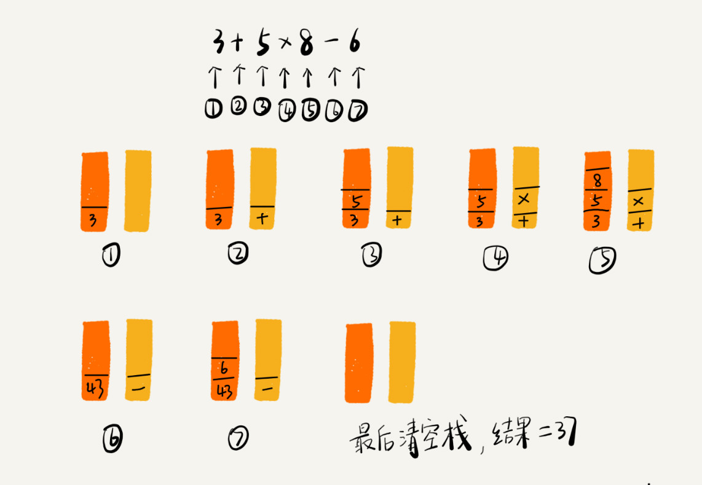<figure class="highlight plain"><table><tr><td class="gutter"><pre><span class="line">1</span><br><span class="line">2</span><br><span class="line">3</span><br><span class="line">4</span><br><span class="line">5</span><br><span class="line">6</span><br><span class="line">7</span><br><span class="line">8</span><br><span class="line">9</span><br><span class="line">10</span><br><span class="line">11</span><br><span class="line">12</span><br><span class="line">13</span><br><span class="line">14</span><br><span class="line">15</span><br><span class="line">16</span><br><span class="line">17</span><br><span class="line">18</span><br><span class="line">19</span><br><span class="line">20</span><br><span class="line">21</span><br><span class="line">22</span><br><span class="line">23</span><br><span class="line">24</span><br><span class="line">25</span><br><span class="line">26</span><br><span class="line">27</span><br><span class="line">28</span><br><span class="line">29</span><br><span class="line">30</span><br><span class="line">31</span><br><span class="line">32</span><br><span class="line">33</span><br><span class="line">34</span><br><span class="line">35</span><br><span class="line">36</span><br><span class="line">37</span><br><span class="line">38</span><br><span class="line">39</span><br><span class="line">40</span><br><span class="line">41</span><br><span class="line">42</span><br><span class="line">43</span><br><span class="line">44</span><br><span class="line">45</span><br><span class="line">46</span><br><span class="line">47</span><br><span class="line">48</span><br><span class="line">49</span><br><span class="line">50</span><br><span class="line">51</span><br><span class="line">52</span><br><span class="line">53</span><br><span class="line">54</span><br><span class="line">55</span><br><span class="line">56</span><br><span class="line">57</span><br><span class="line">58</span><br><span class="line">59</span><br><span class="line">60</span><br></pre></td><td class="code"><pre><span class="line">function calculate(val)&#123;</span><br><span class="line">    var cal = val.split(&apos; &apos;);</span><br><span class="line">    var numAry = [];</span><br><span class="line">    var utilAry = [];</span><br><span class="line">    var level = &#123;</span><br><span class="line">        &apos;+&apos;:1,</span><br><span class="line">        &apos;-&apos;:1,</span><br><span class="line">        &apos;*&apos;:2,</span><br><span class="line">        &apos;/&apos;:2</span><br><span class="line">    &#125;</span><br><span class="line">   </span><br><span class="line">    var toCalNow = function ()&#123;</span><br><span class="line">        var sum = null;</span><br><span class="line">        console.log(&apos;calnow&apos;,numAry,utilAry);</span><br><span class="line">        for(var n=0,j=0;n&lt;numAry.length,j&lt;utilAry.length;n++,j++)&#123;</span><br><span class="line">            var num1 = numAry[n+1];</span><br><span class="line">            if(n == 0)&#123;</span><br><span class="line">                var num2 = numAry[n];</span><br><span class="line">            &#125;</span><br><span class="line">            else&#123;</span><br><span class="line">                var num2 = sum;</span><br><span class="line">            &#125;</span><br><span class="line">            var handler = utilAry[j]</span><br><span class="line">            num2 = parseInt(num2);</span><br><span class="line">            num1 = parseInt(num1);</span><br><span class="line">            switch (handler)&#123;</span><br><span class="line">                case &apos;+&apos;:</span><br><span class="line">                    sum = num1 + num2;</span><br><span class="line">                    break;</span><br><span class="line">                case &apos;-&apos;:</span><br><span class="line">                    sum = num1 - num2;</span><br><span class="line">                    break;</span><br><span class="line">                case &apos;*&apos;:</span><br><span class="line">                    sum = num1 * num2;</span><br><span class="line">                    break;</span><br><span class="line">                case &apos;/&apos;:</span><br><span class="line">                    sum = num1 / num2;</span><br><span class="line">            &#125;</span><br><span class="line">        &#125;</span><br><span class="line">        console.log(&apos;sum&apos;,sum);</span><br><span class="line">        numAry = [sum];</span><br><span class="line">        utilAry = [];</span><br><span class="line">    &#125;</span><br><span class="line">    cal.forEach(v =&gt; &#123;</span><br><span class="line">        if(v == &apos;+&apos; || v == &apos;-&apos; || v == &apos;*&apos; || v == &apos;/&apos;)&#123;</span><br><span class="line">            util = utilAry[0]</span><br><span class="line">            if(!!util &amp; level[v] &lt; level[util])&#123;</span><br><span class="line">                toCalNow();</span><br><span class="line">            &#125;</span><br><span class="line">            utilAry.unshift(v)</span><br><span class="line">            </span><br><span class="line">        &#125;</span><br><span class="line">        else&#123;</span><br><span class="line">            numAry.unshift(v)</span><br><span class="line">        &#125;</span><br><span class="line">    &#125;);</span><br><span class="line">    toCalNow();</span><br><span class="line">    return numAry[0];</span><br><span class="line">&#125;</span><br><span class="line">&gt;&gt;&gt; console.log(calculate(&apos;12 + 2 * 2 - 1 * 2 / 2&apos;))</span><br></pre></td></tr></table></figure>
</li>
</ul>
<h4 id="队列"><a href="#队列" class="headerlink" title="队列"></a>队列</h4><ul>
<li>先进者先出</li>
<li>基于数组顺序队列</li>
<li>基于链表的链式队列</li>
<li><p>循环队列</p>
<figure class="highlight plain"><table><tr><td class="gutter"><pre><span class="line">1</span><br><span class="line">2</span><br><span class="line">3</span><br><span class="line">4</span><br><span class="line">5</span><br><span class="line">6</span><br><span class="line">7</span><br><span class="line">8</span><br><span class="line">9</span><br><span class="line">10</span><br><span class="line">11</span><br><span class="line">12</span><br><span class="line">13</span><br><span class="line">14</span><br><span class="line">15</span><br><span class="line">16</span><br><span class="line">17</span><br><span class="line">18</span><br><span class="line">19</span><br><span class="line">20</span><br><span class="line">21</span><br><span class="line">22</span><br><span class="line">23</span><br><span class="line">24</span><br><span class="line">25</span><br><span class="line">26</span><br><span class="line">27</span><br><span class="line">28</span><br><span class="line">29</span><br><span class="line">30</span><br><span class="line">31</span><br><span class="line">32</span><br></pre></td><td class="code"><pre><span class="line">public class CircularQueue &#123; </span><br><span class="line">    // 数组：items，数组大小：n</span><br><span class="line">    private $items = []; </span><br><span class="line">    private $n = 0;</span><br><span class="line">    private $head = 0;</span><br><span class="line">    private $tail = 0;</span><br><span class="line"></span><br><span class="line">    public function CircularQueue(int capacity)&#123;</span><br><span class="line">        $item = [capacity];  //长度为capacity的数组</span><br><span class="line">        $this-&gt;n = capacity;</span><br><span class="line">    &#125;</span><br><span class="line">    // 入队</span><br><span class="line">    public function enqueue(String item)&#123;</span><br><span class="line">        //队列满了</span><br><span class="line">        if (($this-&gt;tail + 1) % $this-&gt;n == $this-&gt;head)&#123;</span><br><span class="line">            return false;</span><br><span class="line">        &#125;</span><br><span class="line">        $this-&gt;items[$this-&gt;tail] = item;</span><br><span class="line">        $this-&gt;tail = ($this-&gt;tail + 1) % $this-&gt;n;</span><br><span class="line">        return true;</span><br><span class="line">    &#125;</span><br><span class="line">    // 出队</span><br><span class="line">    public function dequeue()&#123;</span><br><span class="line">        // 如果head == tail 代表队列为空</span><br><span class="line">        if($this-&gt;head == $this-&gt;tail)&#123;</span><br><span class="line">            return false;</span><br><span class="line">        &#125;</span><br><span class="line">        ret = $this-&gt;items[$this-&gt;head];</span><br><span class="line">        $this-&gt;head = ($this-&gt;head + 1) % n ;</span><br><span class="line">        return ret;</span><br><span class="line">    &#125;</span><br><span class="line">&#125;</span><br></pre></td></tr></table></figure>
</li>
<li><p>阻塞队列</p>
</li>
</ul>
<ol>
<li>“消费者”-“生产者”模式</li>
<li>线程池没有空闲线程时，新的任务请求线程资源时，线程池讲新的请求放进数组队列（一定长度）阻塞等待，更多的请求拒绝。</li>
</ol>
<ul>
<li>并发队列<br>加锁</li>
</ul>
<h4 id="递归"><a href="#递归" class="headerlink" title="递归"></a>递归</h4><ul>
<li>关键：找到如何将大问题分解为小问题的规律，并且基于此写出递归公式，然后在推敲出终止条件，最后将递归公式跟终止条件翻译成代码。</li>
<li>警惕堆栈溢出：函数调用的时候，系统栈/虚拟机调用栈空间一般不大，如果递归求解规模很大，调用层次很深，就有可能造成堆栈溢出。</li>
<li>警惕重复计算：可以通过一个数据结构（如散列表）记录已经求过值f(k)数据，以避免重复计算。</li>
<li>警惕死循环：检查环的存在。</li>
<li>空间复杂度高</li>
</ul>
<h4 id="排序"><a href="#排序" class="headerlink" title="排序"></a>排序</h4><p>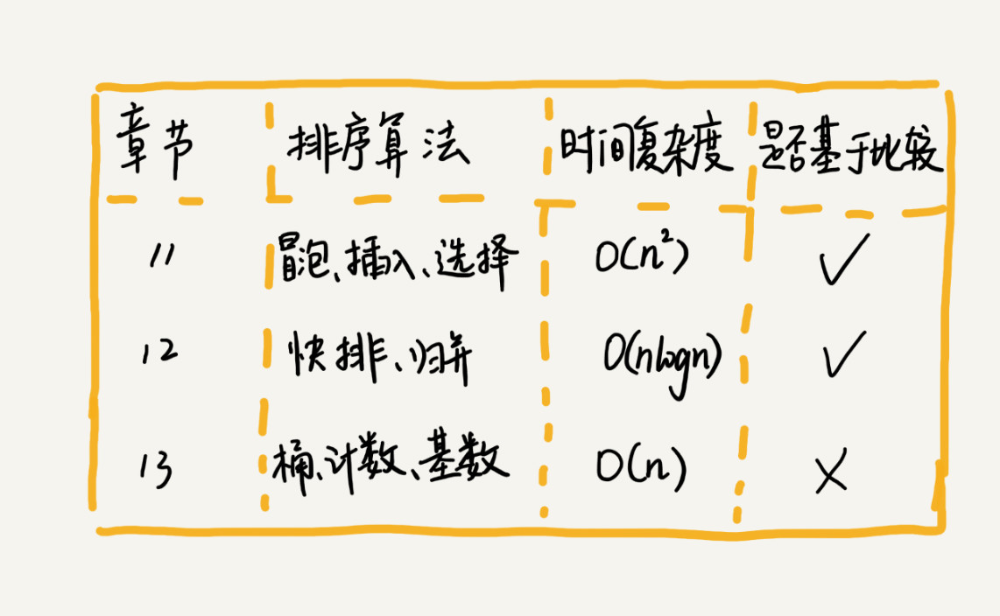</p>
<ul>
<li>内存消耗</li>
<li>稳定性：稳定排序算法可以保持金额相同的两个对象，在排序之后的前后顺序保持不变。</li>
</ul>
<h5 id="冒泡排序-O-n-2"><a href="#冒泡排序-O-n-2" class="headerlink" title="冒泡排序 O(n^2)"></a>冒泡排序 O(n^2)</h5><p>冒泡排序只会操作相邻的两个数据。每次冒泡操作都会对相邻的两个元素进行比较，看是否满足大小关系要求。如果不满足就让它俩互换。</p>
<ul>
<li>原地排序算法</li>
<li>稳定排序算法</li>
<li>时间复杂度：最好O(n)，最差O(n^2)，平均O(n^2)<br>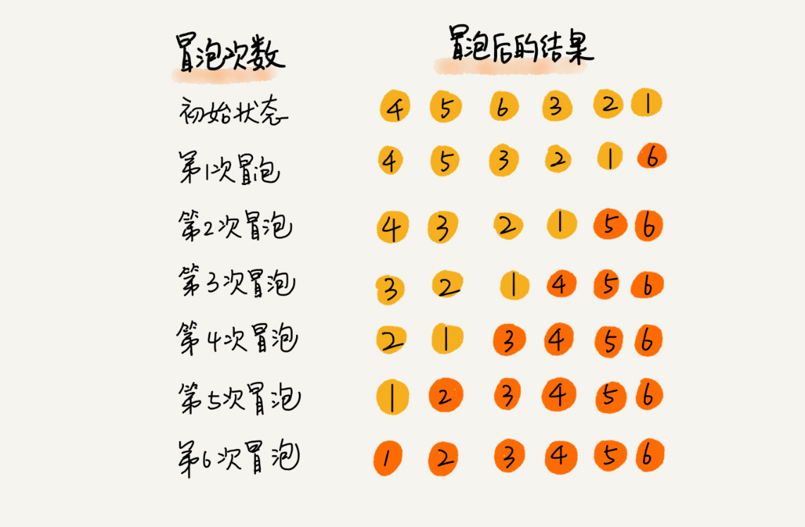</li>
</ul>
<figure class="highlight plain"><table><tr><td class="gutter"><pre><span class="line">1</span><br><span class="line">2</span><br><span class="line">3</span><br><span class="line">4</span><br><span class="line">5</span><br><span class="line">6</span><br><span class="line">7</span><br><span class="line">8</span><br><span class="line">9</span><br><span class="line">10</span><br><span class="line">11</span><br><span class="line">12</span><br><span class="line">13</span><br><span class="line">14</span><br><span class="line">15</span><br><span class="line">16</span><br><span class="line">17</span><br><span class="line">18</span><br><span class="line">19</span><br><span class="line">20</span><br><span class="line">21</span><br></pre></td><td class="code"><pre><span class="line">// 冒泡排序，a 表示数组</span><br><span class="line">function bubbleSort($a)&#123;</span><br><span class="line">    var $n = $a.length;</span><br><span class="line">    if($n&lt;=1) return;</span><br><span class="line">    for($i=0; $i&lt;$n; $i++)&#123;</span><br><span class="line">        var $flag = false;</span><br><span class="line">        for ($j=0; $j&lt;$n-$i-1; $j++)&#123;</span><br><span class="line">            // 交换</span><br><span class="line">            if($a[$j] &gt; $a[$j+1])&#123; </span><br><span class="line">                var $tmp = $a[$j];</span><br><span class="line">                $a[$j] = $a[$j+1];</span><br><span class="line">                $a[$j+1] = $tmp;</span><br><span class="line">                // 有数据交换，可能可以继续交换</span><br><span class="line">                $flag = true;</span><br><span class="line">            &#125;</span><br><span class="line">            // 如果没有交换</span><br><span class="line">            if(!$flag) break;</span><br><span class="line">        &#125;</span><br><span class="line">    &#125;</span><br><span class="line">    return $a;</span><br><span class="line">&#125;</span><br></pre></td></tr></table></figure>
<h5 id="插入排序-O-n-2"><a href="#插入排序-O-n-2" class="headerlink" title="插入排序 O(n^2)"></a>插入排序 O(n^2)</h5><p>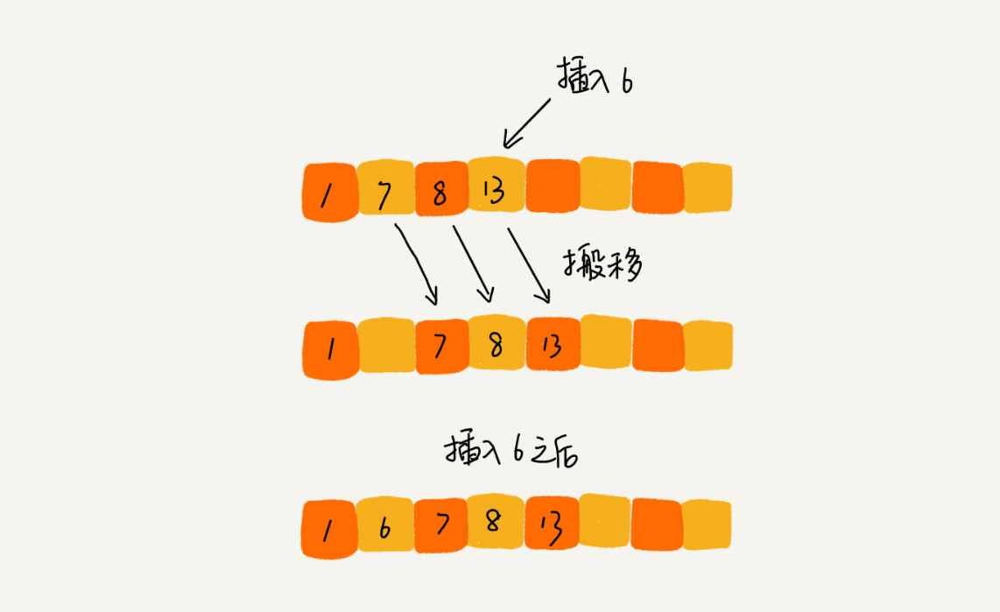</p>
<ul>
<li>将数组中数据分为已排序空间、未排序空间，初始已排序空间只有数组第一个元素。插入排序核心算法就是取未排序空间元素，在已排序空间中找到合适的位置插入，并保证已排序空间一直有序，重复这个过程，直到未排序空间为空。</li>
<li>原地排序算法</li>
<li>稳定排序算法</li>
<li>时间复杂度：最好O(n)，最坏O(n^2)，平均O(n^2)<figure class="highlight plain"><table><tr><td class="gutter"><pre><span class="line">1</span><br><span class="line">2</span><br><span class="line">3</span><br><span class="line">4</span><br><span class="line">5</span><br><span class="line">6</span><br><span class="line">7</span><br><span class="line">8</span><br><span class="line">9</span><br><span class="line">10</span><br><span class="line">11</span><br><span class="line">12</span><br><span class="line">13</span><br><span class="line">14</span><br><span class="line">15</span><br><span class="line">16</span><br><span class="line">17</span><br><span class="line">18</span><br></pre></td><td class="code"><pre><span class="line">// 插入排序 $a表示数组</span><br><span class="line">function insertionSort($a)&#123;</span><br><span class="line">    if($a.length&lt;=1) return;</span><br><span class="line">    for(var i=1;i&lt;$a.length;i++)&#123;</span><br><span class="line">        var value = $a[i];</span><br><span class="line">        var j = i-1;</span><br><span class="line">        for(;j&gt;=0;j--)&#123;</span><br><span class="line">            if(value &lt; $a[j])&#123;</span><br><span class="line">                $a[j+1] = $a[j] // 数据移动</span><br><span class="line">            &#125;</span><br><span class="line">            else&#123;</span><br><span class="line">                break;</span><br><span class="line">            &#125;</span><br><span class="line">        &#125;</span><br><span class="line">        $a[j+1] = value //移动完再插入数据到位置</span><br><span class="line">    &#125;</span><br><span class="line">    return $a</span><br><span class="line">&#125;</span><br></pre></td></tr></table></figure>
</li>
</ul>
<h5 id="选择排序-O-n-2"><a href="#选择排序-O-n-2" class="headerlink" title="选择排序 O(n^2)"></a>选择排序 O(n^2)</h5><p>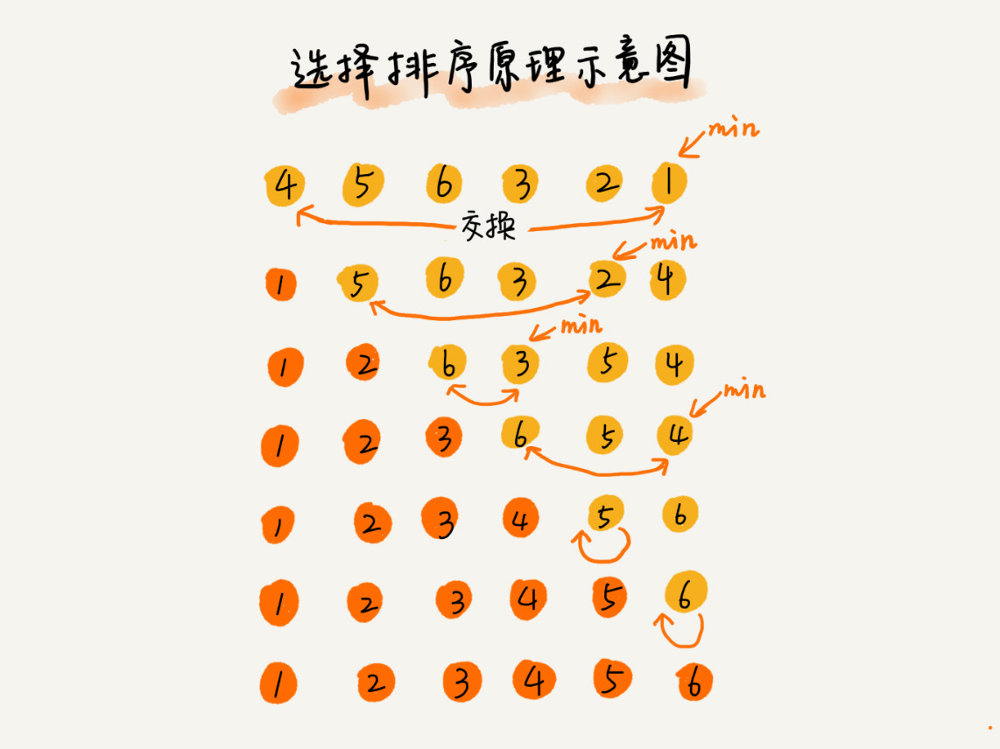</p>
<ul>
<li>类似插入排序，有已排序空间、未排序空间，但是每次会从未排序空间选择最小的元素，插入到已排序空间的的末尾。</li>
<li>原地排序算法</li>
<li>不稳定排序算法</li>
<li>时间复杂度：最好O(n^2)，最坏O(n^2),平均O(n^2)<figure class="highlight plain"><table><tr><td class="gutter"><pre><span class="line">1</span><br><span class="line">2</span><br><span class="line">3</span><br><span class="line">4</span><br><span class="line">5</span><br><span class="line">6</span><br><span class="line">7</span><br><span class="line">8</span><br><span class="line">9</span><br><span class="line">10</span><br><span class="line">11</span><br><span class="line">12</span><br><span class="line">13</span><br><span class="line">14</span><br><span class="line">15</span><br><span class="line">16</span><br></pre></td><td class="code"><pre><span class="line">// 选择排序 $a表示数组</span><br><span class="line">function selectionSort($a)&#123;</span><br><span class="line">    if($a.length&lt;=1) return;</span><br><span class="line">    for(var i=0;i&lt;$a.length;i++)&#123;</span><br><span class="line">        value = i;</span><br><span class="line">        for(var j=i;j&lt;$a.length;j++)&#123;</span><br><span class="line">            if($a[j]&lt; $a[value])&#123; //找出最小的元素</span><br><span class="line">                value = j;</span><br><span class="line">            &#125;</span><br><span class="line">        &#125;</span><br><span class="line">        tmp = $a[value];</span><br><span class="line">        $a.splice(value,1);  </span><br><span class="line">        $a.splice(i,0,tmp);  //把最小的元素迁移到已排序的末尾</span><br><span class="line">    &#125;</span><br><span class="line">    return $a</span><br><span class="line">&#125;</span><br></pre></td></tr></table></figure>
</li>
</ul>
<h5 id="O-n-2-中优选插入排序"><a href="#O-n-2-中优选插入排序" class="headerlink" title="O(n^2)中优选插入排序"></a>O(n^2)中优选插入排序</h5><ul>
<li>与冒泡排序对比：插入排序赋值操作更少，所以性能更优</li>
<li>与选择排序对比：插入排序是稳定性排序算法<figure class="highlight plain"><table><tr><td class="gutter"><pre><span class="line">1</span><br><span class="line">2</span><br><span class="line">3</span><br><span class="line">4</span><br><span class="line">5</span><br><span class="line">6</span><br><span class="line">7</span><br></pre></td><td class="code"><pre><span class="line">// 冒泡排序</span><br><span class="line">var $tmp = $a[$j];</span><br><span class="line">$a[$j] = $a[$j+1];</span><br><span class="line">$a[$j+1] = $tmp;</span><br><span class="line"></span><br><span class="line">// 插入排序</span><br><span class="line">$a[j+1] = $a[j] // 数据移动</span><br></pre></td></tr></table></figure>
</li>
</ul>
<h5 id="归并排序-O-nlogn"><a href="#归并排序-O-nlogn" class="headerlink" title="归并排序 O(nlogn)"></a>归并排序 O(nlogn)</h5><p>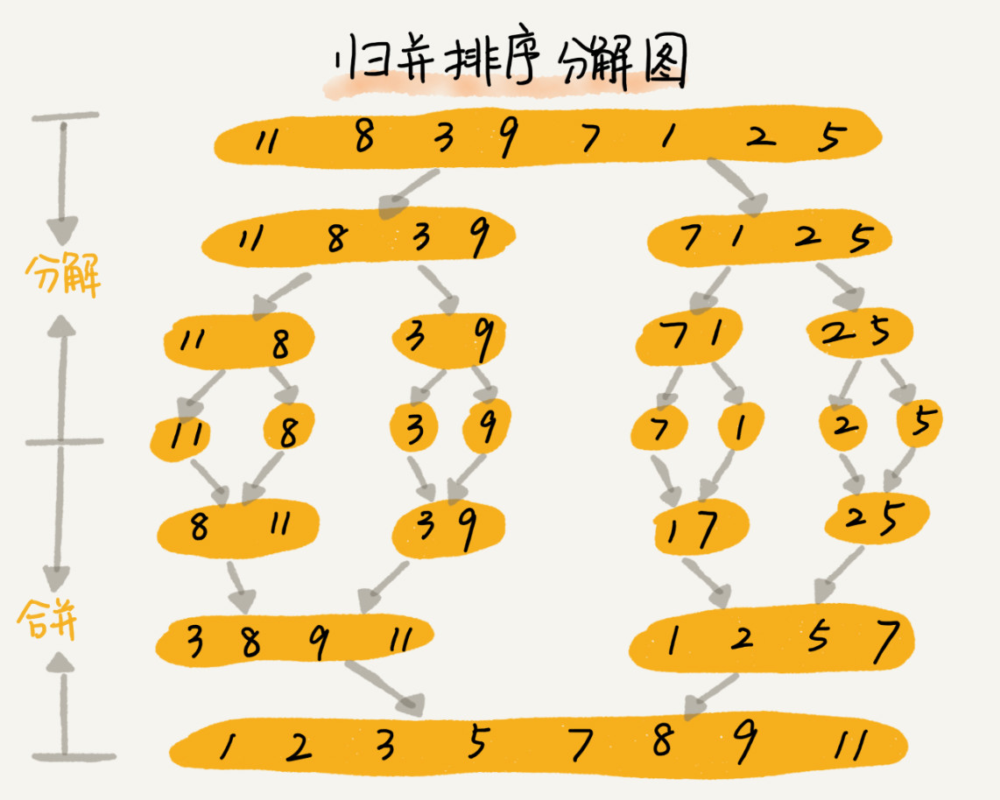</p>
<ul>
<li>非原地排序算法，由于合并数组需要额外申请空间。</li>
<li>稳定算法</li>
<li>时间复杂度：O(nlogn)</li>
<li>空间复杂度 O(n)<figure class="highlight plain"><table><tr><td class="gutter"><pre><span class="line">1</span><br><span class="line">2</span><br><span class="line">3</span><br><span class="line">4</span><br><span class="line">5</span><br><span class="line">6</span><br><span class="line">7</span><br><span class="line">8</span><br><span class="line">9</span><br><span class="line">10</span><br><span class="line">11</span><br><span class="line">12</span><br><span class="line">13</span><br><span class="line">14</span><br><span class="line">15</span><br><span class="line">16</span><br><span class="line">17</span><br><span class="line">18</span><br><span class="line">19</span><br><span class="line">20</span><br><span class="line">21</span><br><span class="line">22</span><br><span class="line">23</span><br><span class="line">24</span><br><span class="line">25</span><br><span class="line">26</span><br><span class="line">27</span><br><span class="line">28</span><br><span class="line">29</span><br><span class="line">30</span><br><span class="line">31</span><br><span class="line">32</span><br><span class="line">33</span><br><span class="line">34</span><br><span class="line">35</span><br><span class="line">36</span><br><span class="line">37</span><br><span class="line">38</span><br><span class="line">39</span><br><span class="line">40</span><br><span class="line">41</span><br><span class="line">42</span><br></pre></td><td class="code"><pre><span class="line">// 归并排序，a表示数组</span><br><span class="line">function mergeSort(a)&#123;</span><br><span class="line">    return mergeSort_c(a,0,a.length-1);</span><br><span class="line">&#125;</span><br><span class="line">function mergeSort_c(a,p,r)&#123;</span><br><span class="line">    // 一个数返回自身</span><br><span class="line">    if(r == p)&#123;</span><br><span class="line">        return [a[r]]</span><br><span class="line">    &#125;</span><br><span class="line">    // 两个数对比返回</span><br><span class="line">    if(r-p&lt;=1)&#123;</span><br><span class="line">        return concatSort([a[p]],[a[r]])</span><br><span class="line">    &#125;</span><br><span class="line">    // 多个数再拆分</span><br><span class="line">    else&#123;</span><br><span class="line">        var q = parseInt((p + r) / 2);</span><br><span class="line">        var ary1 = mergeSort_c(a,p,q);</span><br><span class="line">        var ary2 = mergeSort_c(a,q+1,r);</span><br><span class="line">        return concatSort(ary1,ary2)</span><br><span class="line">    &#125;</span><br><span class="line">&#125;</span><br><span class="line">// 合并方法</span><br><span class="line">function concatSort(ary1,ary2)&#123;</span><br><span class="line">    var tmp = [];</span><br><span class="line">    while (ary1.length&gt;0 &amp;&amp; ary2.length&gt;0) &#123;</span><br><span class="line">        if(ary1[0]&lt;= ary2[0])&#123;</span><br><span class="line">            tmp.push(ary1[0]);</span><br><span class="line">            ary1.splice(0,1);</span><br><span class="line">        &#125;</span><br><span class="line">        else&#123;</span><br><span class="line">            tmp.push(ary2[0]);</span><br><span class="line">            ary2.splice(0,1);</span><br><span class="line">        &#125;</span><br><span class="line">    &#125;</span><br><span class="line">    if(ary1.length&gt;0)&#123;</span><br><span class="line">        tmp = tmp.concat(ary1);</span><br><span class="line">    &#125;</span><br><span class="line">    if(ary2.length&gt;0)&#123;</span><br><span class="line">        tmp = tmp.concat(ary2);</span><br><span class="line">    &#125;</span><br><span class="line">    return tmp;</span><br><span class="line">&#125;</span><br></pre></td></tr></table></figure>
</li>
</ul>
<h5 id="快速排序-O-nlogn-O-n-2"><a href="#快速排序-O-nlogn-O-n-2" class="headerlink" title="快速排序 O(nlogn)~O(n^2)"></a>快速排序 O(nlogn)~O(n^2)</h5><p>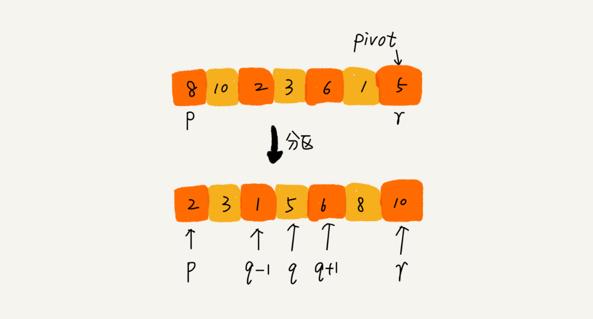</p>
<ul>
<li>如果要排序数组下标p到r之间的一组数据，我们选择p到r之间任意一个数据为pivot（分区点）。遍历p到r之间的数据，将小于pivot的放在左边，大于pivot放在右边。根据分治递归的思想，可以用递归排序p到q-1之间的数据和q+1到r之间的数据，直到区间缩小为1，这样说明所有数据都是有序的。</li>
<li>利用快排实现O(n)找到一个数组的第K大元素。</li>
<li>原地排序算法</li>
<li>不稳定算法</li>
<li>时间复杂度：最好O(nlogn),最差O(n^2)</li>
<li>优化分区点选择：<ol>
<li>三数取中：取头、中、尾三个数，去中间值那个数作为pivot。</li>
<li>随机法。<figure class="highlight plain"><table><tr><td class="gutter"><pre><span class="line">1</span><br><span class="line">2</span><br><span class="line">3</span><br><span class="line">4</span><br><span class="line">5</span><br><span class="line">6</span><br><span class="line">7</span><br><span class="line">8</span><br><span class="line">9</span><br><span class="line">10</span><br><span class="line">11</span><br><span class="line">12</span><br><span class="line">13</span><br><span class="line">14</span><br><span class="line">15</span><br><span class="line">16</span><br><span class="line">17</span><br><span class="line">18</span><br><span class="line">19</span><br><span class="line">20</span><br><span class="line">21</span><br><span class="line">22</span><br><span class="line">23</span><br><span class="line">24</span><br><span class="line">25</span><br><span class="line">26</span><br><span class="line">27</span><br><span class="line">28</span><br><span class="line">29</span><br><span class="line">30</span><br><span class="line">31</span><br><span class="line">32</span><br></pre></td><td class="code"><pre><span class="line">// 快速排序，A 是数组，n 表示数组的大小 </span><br><span class="line">function quickSort(a)&#123;</span><br><span class="line">    return quickSort_c(a,0,a.length-1);</span><br><span class="line">&#125;</span><br><span class="line">function quickSort_c(a,p,r)&#123;</span><br><span class="line">    if(p&gt;=r)&#123;</span><br><span class="line">        return;</span><br><span class="line">    &#125;</span><br><span class="line">    // 分区</span><br><span class="line">    var partition =function (p,r)&#123;</span><br><span class="line">        var pivot = a[r];  // 随便选一个作为pivot</span><br><span class="line">        var i = p;</span><br><span class="line">        for(var j=p;j&lt;r;j++)&#123;</span><br><span class="line">            if(a[j]&lt;pivot)&#123;</span><br><span class="line">                var tmp = a[j];</span><br><span class="line">                a[j] = a[i];</span><br><span class="line">                a[i] = tmp;</span><br><span class="line">                i++;</span><br><span class="line">            &#125;</span><br><span class="line">        &#125;</span><br><span class="line">        // 交换pivot的位置，放在两个区中间</span><br><span class="line">        var tmp = a[i];</span><br><span class="line">        a[i] = a[r];</span><br><span class="line">        a[r] = tmp;</span><br><span class="line">        return i;</span><br><span class="line">    &#125;</span><br><span class="line"></span><br><span class="line">    var q = partition(p,r); </span><br><span class="line">    quickSort_c(a,p,q-1); //整理左边</span><br><span class="line">    quickSort_c(a,q+1,r); //整理右边</span><br><span class="line">    return a;</span><br><span class="line">&#125;</span><br></pre></td></tr></table></figure>
</li>
</ol>
</li>
</ul>
<h5 id="归并排序、快速排序对比"><a href="#归并排序、快速排序对比" class="headerlink" title="归并排序、快速排序对比"></a>归并排序、快速排序对比</h5><ul>
<li>都利用分治思想，利用迭代实现。</li>
<li>归并排序：从下到上，先处理子问题再合并。稳定但非原地算法。</li>
<li>快速排序：从上到下，先分区，再处理子问题。不稳定但是原地算法。</li>
</ul>
<h5 id="桶排序-O-n"><a href="#桶排序-O-n" class="headerlink" title="桶排序 O(n)"></a>桶排序 O(n)</h5><p>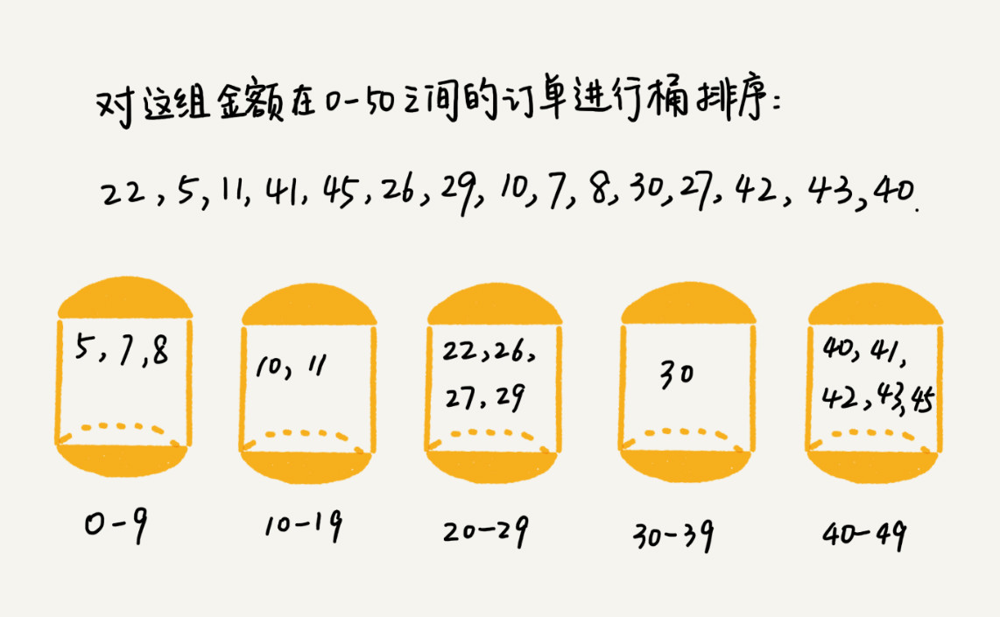</p>
<ul>
<li>核心思想：将要排序的数据分到几个有序的桶里，每个桶的数据再单独进行排序，排完后，再把每个桶里的数据按照顺序依次取出。</li>
<li>时间复杂度：O(n)</li>
<li>数据要求严苛：数据需要容易划分为几个桶，并且有天然的大小顺序，数据在每个桶分布需要均匀。</li>
<li>适合使用在外部排序（数据存储在外部磁盘，数据量大，内存有限，无法将数据全部加载到内存中）。</li>
</ul>
<h5 id="计数排序-O-n"><a href="#计数排序-O-n" class="headerlink" title="计数排序 O(n)"></a>计数排序 O(n)</h5><ul>
<li>桶排序特殊情况，当数据范围不大的时候。</li>
<li>时间复杂度：O(n)<br>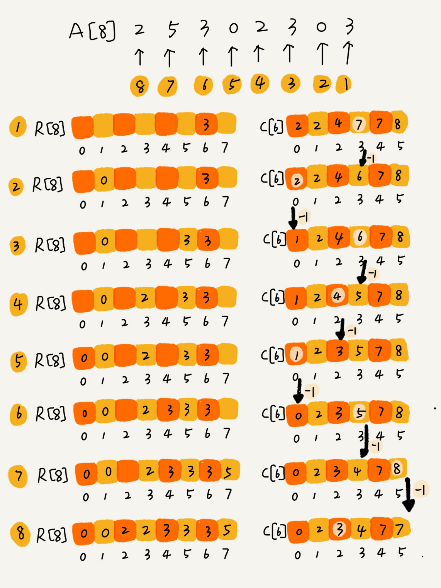<br>其中，A数组为原始数组，C数组为，下标对应分数，值为小于等于该分数的数量。<figure class="highlight plain"><table><tr><td class="gutter"><pre><span class="line">1</span><br><span class="line">2</span><br><span class="line">3</span><br><span class="line">4</span><br><span class="line">5</span><br><span class="line">6</span><br><span class="line">7</span><br><span class="line">8</span><br><span class="line">9</span><br><span class="line">10</span><br><span class="line">11</span><br><span class="line">12</span><br><span class="line">13</span><br><span class="line">14</span><br><span class="line">15</span><br><span class="line">16</span><br><span class="line">17</span><br><span class="line">18</span><br><span class="line">19</span><br><span class="line">20</span><br><span class="line">21</span><br><span class="line">22</span><br><span class="line">23</span><br><span class="line">24</span><br><span class="line">25</span><br><span class="line">26</span><br><span class="line">27</span><br><span class="line">28</span><br><span class="line">29</span><br><span class="line">30</span><br><span class="line">31</span><br><span class="line">32</span><br><span class="line">33</span><br><span class="line">34</span><br><span class="line">35</span><br><span class="line">36</span><br><span class="line">37</span><br><span class="line">38</span><br><span class="line">39</span><br><span class="line">40</span><br><span class="line">41</span><br></pre></td><td class="code"><pre><span class="line">// 计数排序，a 是数组，n 是数组大小。假设数组中存储的都是非负整数。</span><br><span class="line">public void countingSort(int[] a, int n) &#123;</span><br><span class="line">  if (n &lt;= 1) return;</span><br><span class="line"></span><br><span class="line">  // 查找数组中数据的范围</span><br><span class="line">  int max = a[0];</span><br><span class="line">  for (int i = 1; i &lt; n; ++i) &#123;</span><br><span class="line">    if (max &lt; a[i]) &#123;</span><br><span class="line">      max = a[i];</span><br><span class="line">    &#125;</span><br><span class="line">  &#125;</span><br><span class="line"></span><br><span class="line">  int[] c = new int[max + 1]; // 申请一个计数数组 c，下标大小 [0,max]</span><br><span class="line">  for (int i = 0; i &lt;= max; ++i) &#123;</span><br><span class="line">    c[i] = 0;</span><br><span class="line">  &#125;</span><br><span class="line"></span><br><span class="line">  // 计算每个元素的个数，放入 c 中</span><br><span class="line">  for (int i = 0; i &lt; n; ++i) &#123;</span><br><span class="line">    c[a[i]]++;</span><br><span class="line">  &#125;</span><br><span class="line"></span><br><span class="line">  // 依次累加</span><br><span class="line">  for (int i = 1; i &lt;= max; ++i) &#123;</span><br><span class="line">    c[i] = c[i-1] + c[i];</span><br><span class="line">  &#125;</span><br><span class="line"></span><br><span class="line">  // 临时数组 r，存储排序之后的结果</span><br><span class="line">  int[] r = new int[n];</span><br><span class="line">  // 计算排序的关键步骤，有点难理解</span><br><span class="line">  for (int i = n - 1; i &gt;= 0; --i) &#123;</span><br><span class="line">    int index = c[a[i]]-1;</span><br><span class="line">    r[index] = a[i];</span><br><span class="line">    c[a[i]]--;</span><br><span class="line">  &#125;</span><br><span class="line"></span><br><span class="line">  // 将结果拷贝给 a 数组</span><br><span class="line">  for (int i = 0; i &lt; n; ++i) &#123;</span><br><span class="line">    a[i] = r[i];</span><br><span class="line">  &#125;</span><br><span class="line">&#125;</span><br></pre></td></tr></table></figure>
</li>
</ul>
<h5 id="基数排序-O-n"><a href="#基数排序-O-n" class="headerlink" title="基数排序 O(n)"></a>基数排序 O(n)</h5><p>数据分割成位，按位来排序。</p>
<ul>
<li>数据要求：可分割成独立的位，位之间有递进关系，如果a数据高位比b数据大，那剩下的都不用比较。每一位数据范围不大，要可以用线性排序算法来排序。</li>
<li>时间复杂度：O(n)</li>
</ul>
<h5 id="排序优化"><a href="#排序优化" class="headerlink" title="排序优化"></a>排序优化</h5><ol>
<li>排序算法对比<br>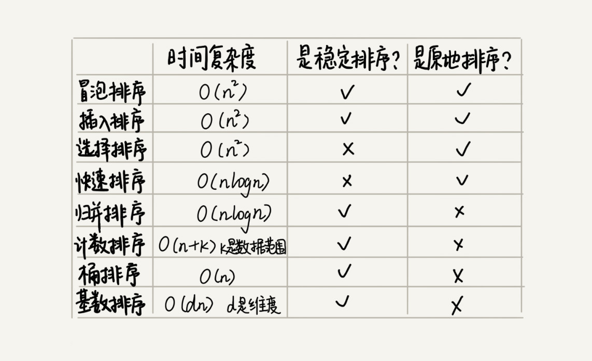</li>
<li>递归过深的堆栈溢出：限制递归深度；在堆上模拟实现函数调用栈，手动模拟递归压栈、出栈过程。</li>
<li>对于小规模数据（百级），O(n^2) 的排序算法并不一定比 O(nlogn) 排序算法执行时间长，可以选择简单、不需要递归的插入排序。</li>
</ol>
<h4 id="二分查找-O-logn"><a href="#二分查找-O-logn" class="headerlink" title="二分查找 O(logn)"></a>二分查找 O(logn)</h4><ol>
<li>每次都跟区间中的中间元素对比，将待查找的区间缩小一半，直到找到要找对元素，或者区间缩小为零。</li>
<li>时间复杂度：O(logn)</li>
<li><p>非递归实现（当数据中不存在重复数据时）</p>
<figure class="highlight plain"><table><tr><td class="gutter"><pre><span class="line">1</span><br><span class="line">2</span><br><span class="line">3</span><br><span class="line">4</span><br><span class="line">5</span><br><span class="line">6</span><br><span class="line">7</span><br><span class="line">8</span><br><span class="line">9</span><br><span class="line">10</span><br><span class="line">11</span><br><span class="line">12</span><br><span class="line">13</span><br><span class="line">14</span><br><span class="line">15</span><br><span class="line">16</span><br><span class="line">17</span><br><span class="line">18</span><br><span class="line">19</span><br></pre></td><td class="code"><pre><span class="line">function bsearch(a,value)&#123;</span><br><span class="line">    var low = 0;</span><br><span class="line">    var high = a.length -1;</span><br><span class="line">    // 如果low和high比较大，容易造成溢出，可以使用位运算 low+((high-low)&gt;&gt;1)</span><br><span class="line">    var mid = parseInt(low +(high-low) /2); </span><br><span class="line">    // 注意循环退出条件有相等对情况</span><br><span class="line">    while (low&lt;=high)&#123;</span><br><span class="line">        if(a[mid] == value)&#123;</span><br><span class="line">            return mid;</span><br><span class="line">        &#125;</span><br><span class="line">        else if(a[mid] &lt; value)&#123;</span><br><span class="line">            low = mid+1;</span><br><span class="line">        &#125;</span><br><span class="line">        else&#123;</span><br><span class="line">            high = mid-1;</span><br><span class="line">        &#125;</span><br><span class="line">    &#125;</span><br><span class="line">    return -1;</span><br><span class="line">&#125;</span><br></pre></td></tr></table></figure>
</li>
<li><p>递归实现（当数据中不存在重复数据时）</p>
<figure class="highlight plain"><table><tr><td class="gutter"><pre><span class="line">1</span><br><span class="line">2</span><br><span class="line">3</span><br><span class="line">4</span><br><span class="line">5</span><br><span class="line">6</span><br><span class="line">7</span><br><span class="line">8</span><br><span class="line">9</span><br><span class="line">10</span><br><span class="line">11</span><br><span class="line">12</span><br><span class="line">13</span><br><span class="line">14</span><br><span class="line">15</span><br><span class="line">16</span><br></pre></td><td class="code"><pre><span class="line">function bsearch(a,value)&#123;</span><br><span class="line">    return bsearchInternally(a,0,a.length-1,value);</span><br><span class="line">&#125;</span><br><span class="line">function bsearchInternally(a,low,high,value)&#123;</span><br><span class="line">    if(low&gt;high) return -1;</span><br><span class="line">    var mid = low+((high-low)&gt;&gt;1);</span><br><span class="line">    if(a[mid] == value)&#123;</span><br><span class="line">        return mid;</span><br><span class="line">    &#125;</span><br><span class="line">    else if(a[mid] &lt; value)&#123;</span><br><span class="line">        return bsearchInternally(a,mid+1,high,value);</span><br><span class="line">    &#125;</span><br><span class="line">    else&#123;</span><br><span class="line">        return bsearchInternally(a,low,mid-1,value);</span><br><span class="line">    &#125;</span><br><span class="line">&#125;</span><br></pre></td></tr></table></figure>
</li>
<li><p>局限性</p>
</li>
</ol>
<ul>
<li>依赖顺序表结构（数组），因为数组根据下标查找是O(1)，链表是O(n)。</li>
<li>依赖有序数据，只适合用在一次排序，多次查找对场景。</li>
<li>数据量太少不适合，顺序遍历更快。但是如果数据间比较操作比较耗时，不管数据量太少，推荐使用二分查找。</li>
<li>数据量太大不合适，因为内存不足以存储这个数组。</li>
</ul>
<h5 id="二分查找变形"><a href="#二分查找变形" class="headerlink" title="二分查找变形"></a>二分查找变形</h5><ol>
<li><p>查找第一个值等于给定值对元素</p>
<figure class="highlight plain"><table><tr><td class="gutter"><pre><span class="line">1</span><br><span class="line">2</span><br><span class="line">3</span><br><span class="line">4</span><br><span class="line">5</span><br><span class="line">6</span><br><span class="line">7</span><br><span class="line">8</span><br><span class="line">9</span><br><span class="line">10</span><br><span class="line">11</span><br><span class="line">12</span><br><span class="line">13</span><br><span class="line">14</span><br><span class="line">15</span><br><span class="line">16</span><br><span class="line">17</span><br><span class="line">18</span><br><span class="line">19</span><br><span class="line">20</span><br><span class="line">21</span><br><span class="line">22</span><br><span class="line">23</span><br><span class="line">24</span><br></pre></td><td class="code"><pre><span class="line">function bsearch(a,value)&#123;</span><br><span class="line">    var low = 0;</span><br><span class="line">    var high = a.length -1;</span><br><span class="line">    while(low&lt;=high)&#123;</span><br><span class="line">        var mid = parseInt((low+high)/2);</span><br><span class="line">        if(a[mid]&lt;value)&#123;</span><br><span class="line">            low = mid+1;</span><br><span class="line">        &#125;</span><br><span class="line">        else if(a[mid]&gt;value)&#123;</span><br><span class="line">            high = mid-1;</span><br><span class="line">        &#125;</span><br><span class="line">        else&#123;</span><br><span class="line">            // 如果是第一个元素或者前一个元素不等于value</span><br><span class="line">            if(mid == 0 || a[mid-1] != value)&#123;</span><br><span class="line">                return mid</span><br><span class="line">            &#125;</span><br><span class="line">            // 否则要找到的元素还在[low,high-1]区间</span><br><span class="line">            else&#123;</span><br><span class="line">                high = mid -1;</span><br><span class="line">            &#125;</span><br><span class="line">        &#125;</span><br><span class="line">    &#125;</span><br><span class="line">    return -1;</span><br><span class="line">&#125;</span><br></pre></td></tr></table></figure>
</li>
<li><p>查找最后一个等于给定值的元素</p>
<figure class="highlight plain"><table><tr><td class="gutter"><pre><span class="line">1</span><br><span class="line">2</span><br><span class="line">3</span><br><span class="line">4</span><br><span class="line">5</span><br><span class="line">6</span><br><span class="line">7</span><br><span class="line">8</span><br><span class="line">9</span><br><span class="line">10</span><br><span class="line">11</span><br><span class="line">12</span><br><span class="line">13</span><br><span class="line">14</span><br><span class="line">15</span><br><span class="line">16</span><br><span class="line">17</span><br><span class="line">18</span><br><span class="line">19</span><br><span class="line">20</span><br><span class="line">21</span><br><span class="line">22</span><br></pre></td><td class="code"><pre><span class="line">function bsearch(a,value)&#123;</span><br><span class="line">    var low = 0;</span><br><span class="line">    var high = a.length -1;</span><br><span class="line">    while(low&lt;=high)&#123;</span><br><span class="line">        var mid = parseInt((low+high)/2);</span><br><span class="line">        if(a[mid]&lt;value)&#123;</span><br><span class="line">            low = mid+1;</span><br><span class="line">        &#125;</span><br><span class="line">        else if(a[mid]&gt;value)&#123;</span><br><span class="line">            high = mid-1;</span><br><span class="line">        &#125;</span><br><span class="line">        else&#123;</span><br><span class="line">            if(mid == a.length-1 || a[mid+1] != value)&#123;</span><br><span class="line">                return mid</span><br><span class="line">            &#125;</span><br><span class="line">            else&#123;</span><br><span class="line">                low = mid + 1;</span><br><span class="line">            &#125;</span><br><span class="line">        &#125;</span><br><span class="line">    &#125;</span><br><span class="line">    return -1;</span><br><span class="line">&#125;</span><br></pre></td></tr></table></figure>
</li>
<li><p>查找第一个大于等于给定值的元素</p>
<figure class="highlight plain"><table><tr><td class="gutter"><pre><span class="line">1</span><br><span class="line">2</span><br><span class="line">3</span><br><span class="line">4</span><br><span class="line">5</span><br><span class="line">6</span><br><span class="line">7</span><br><span class="line">8</span><br><span class="line">9</span><br><span class="line">10</span><br><span class="line">11</span><br><span class="line">12</span><br><span class="line">13</span><br><span class="line">14</span><br><span class="line">15</span><br><span class="line">16</span><br><span class="line">17</span><br><span class="line">18</span><br><span class="line">19</span><br></pre></td><td class="code"><pre><span class="line">function bsearch(a,value)&#123;</span><br><span class="line">    var low = 0;</span><br><span class="line">    var high = a.length -1;</span><br><span class="line">    while(low&lt;=high)&#123;</span><br><span class="line">        var mid = parseInt((low+high)/2);</span><br><span class="line">        if(a[mid]&lt;value)&#123;</span><br><span class="line">            low = mid+1;</span><br><span class="line">        &#125;</span><br><span class="line">        else&#123;</span><br><span class="line">            if(mid == 0 || a[mid-1] &lt; value)&#123;</span><br><span class="line">                return mid</span><br><span class="line">            &#125;</span><br><span class="line">            else&#123;</span><br><span class="line">                high = mid - 1;</span><br><span class="line">            &#125;</span><br><span class="line">        &#125;</span><br><span class="line">    &#125;</span><br><span class="line">    return -1;</span><br><span class="line">&#125;</span><br></pre></td></tr></table></figure>
</li>
<li><p>查找最后一个小于等于给定值的元素</p>
<figure class="highlight plain"><table><tr><td class="gutter"><pre><span class="line">1</span><br><span class="line">2</span><br><span class="line">3</span><br><span class="line">4</span><br><span class="line">5</span><br><span class="line">6</span><br><span class="line">7</span><br><span class="line">8</span><br><span class="line">9</span><br><span class="line">10</span><br><span class="line">11</span><br><span class="line">12</span><br><span class="line">13</span><br><span class="line">14</span><br><span class="line">15</span><br><span class="line">16</span><br><span class="line">17</span><br><span class="line">18</span><br><span class="line">19</span><br></pre></td><td class="code"><pre><span class="line">function bsearch(a,value)&#123;</span><br><span class="line">    var low = 0;</span><br><span class="line">    var high = a.length -1;</span><br><span class="line">    while(low&lt;=high)&#123;</span><br><span class="line">        var mid = parseInt((low+high)/2);</span><br><span class="line">        if(a[mid]&gt;value)&#123;</span><br><span class="line">            high = mid-1;</span><br><span class="line">        &#125;</span><br><span class="line">        else&#123;</span><br><span class="line">            if(mid == a.length-1 || a[mid+1] &gt; value)&#123;</span><br><span class="line">                return mid</span><br><span class="line">            &#125;</span><br><span class="line">            else&#123;</span><br><span class="line">                low = low + 1;</span><br><span class="line">            &#125;</span><br><span class="line">        &#125;</span><br><span class="line">    &#125;</span><br><span class="line">    return -1;</span><br><span class="line">&#125;</span><br></pre></td></tr></table></figure>
</li>
</ol>
<h4 id="跳表SkipList-O-logn"><a href="#跳表SkipList-O-logn" class="headerlink" title="跳表SkipList O(logn)"></a>跳表SkipList O(logn)</h4><ol>
<li>链表加多重索引的结构，就是跳表。空间换时间的设计思路。<br>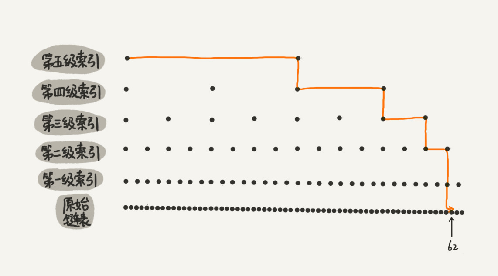</li>
<li>时间复杂度：O(logn)</li>
<li>空间复杂度：O(n)</li>
<li>不更新索引的情况下，动态插入、删除时间复杂度也是O(logn)</li>
<li>更新索引：通过一个随机函数，来决定这个结点插入到哪几级索引中，比如随机函数生成K，将这个结点插入到第一级到第K级这K级索引中。<br>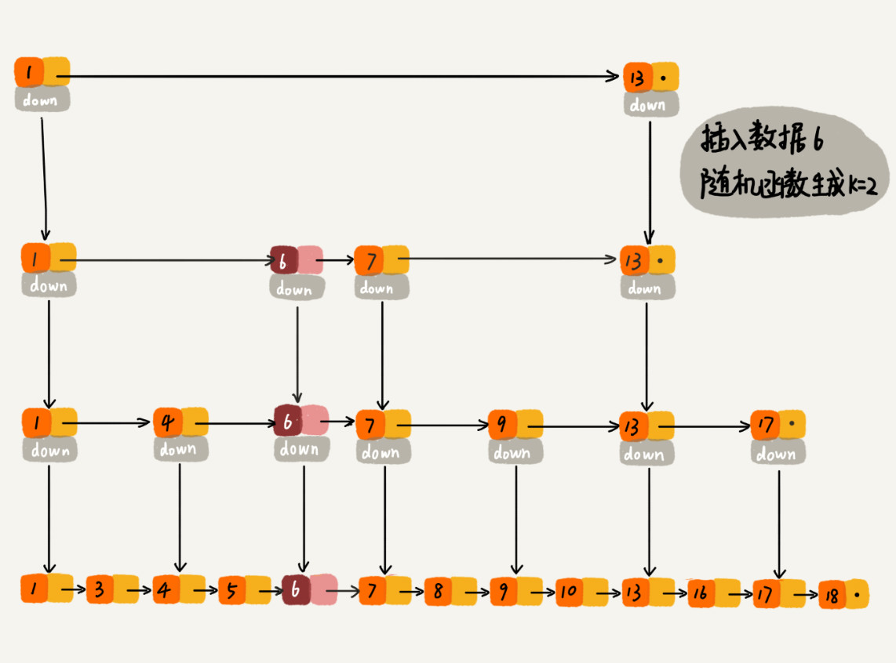</li>
<li>Redis中使用跳表实现有序集合，相比于红黑树，“根据区间[100,990]查到元素”的操作跳表可以做到O(logn)的时间复杂度定位区间起点，然后在起点往后遍历就可以了，效率比较高。实现比较简单。</li>
</ol>
<h4 id="散列表HashTable-O-k"><a href="#散列表HashTable-O-k" class="headerlink" title="散列表HashTable O(k)"></a>散列表HashTable O(k)</h4><p>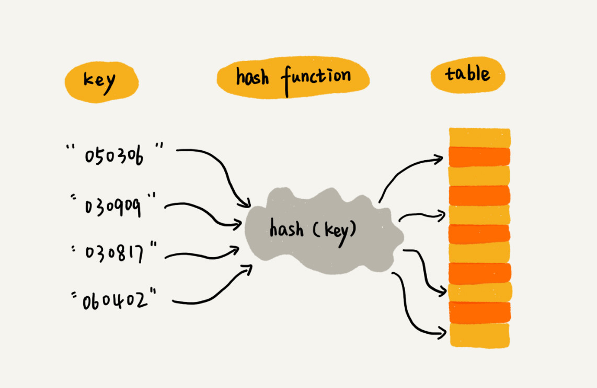</p>
<ol>
<li>散列表用的就是数组支持按照下标随机访问的时候，时间复杂度是O(1)的特性。通过散列函数将元素的键值映射为下标，将数据存储在数组中对应下标的位置。查询的时候，通过同样的散列函数将键值转为下标，根据下标在数组中取值。</li>
<li>散列函数设计的基本要求：<ul>
<li>散列函数计算的散列值是个非负整数。</li>
<li>如果key1 == key2，那hash(key1) == hash(key2)</li>
<li>如果key1 != key2，那hash(key1) != hash(key2)</li>
</ul>
</li>
<li><p>散列冲突：</p>
<ul>
<li>开放寻址法</li>
<li>链表法，链表长度影响了散列表查询时的时间复杂度<br>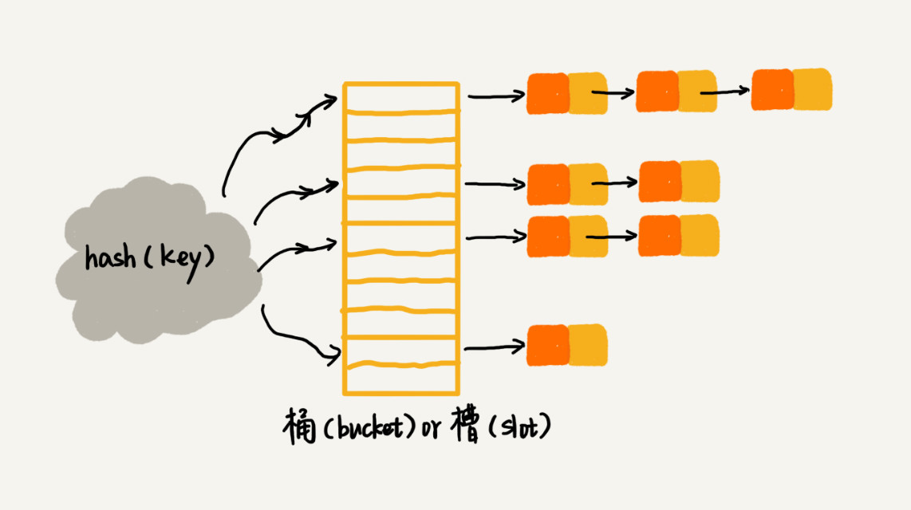</li>
</ul>
</li>
<li><p>装载因子= 填入表中元素个数/散列表的长度。装载因子越大，冲突越多，性能下降越多。</p>
</li>
<li>JS中Object基于哈希表，JSON只是约定的字符串格式，可以转为JavaScript的object。<a href="https://lz5z.com/JavaScript-Object-Hash/" target="_blank" rel="noopener">更多</a></li>
<li>加密中应用：哈希算法就是将任意数据转换成一定范围数据的算法，这种算法的副作用就是会产生冲突。但是在快速查找中出现的副作用，却是加密功能中的核心，因为有冲突，所以从结果就无法逆推出输入值，这样就实现了数据的单向加密。而输入数据的变化却又会影响到哈希串的值，所以我们可以用哈希串来进行数据的校验。</li>
</ol>
<h5 id="工业级别散列表"><a href="#工业级别散列表" class="headerlink" title="工业级别散列表"></a>工业级别散列表</h5><ol>
<li>要求：</li>
</ol>
<ul>
<li>支持快速查询、插入、删除操作；</li>
<li>内存占用合理，不能浪费过多内存空间；</li>
<li>性能稳定，极端情况下，散列表性能不会退化到无法接受的情况</li>
</ul>
<ol start="2">
<li>设计要点：</li>
</ol>
<ul>
<li>设计合适的散列函数：生成的值随机、分布均匀。</li>
<li>定义装在因子阈值，设计动态扩容策略；<br>  避免低效（一次性）的扩容：当装载因子达到阈值时，只申请新空间，不迁移数据。当有一个新数据插入时，将新数据插入到新的散列表中，并从老数据拿出一个迁移到新散列表。迁移期间如果需要查询，先从新散列表查询，没有再从旧散列表查询。</li>
<li>选择合适的散列冲突解决方法；<br>  开放寻址法：适合数据量小，装载因子小（&lt;1)的时候。<br>  链表法：大装在因子容忍度高，适合存储大对象（此时指针占用内存可以忽略）、大数据量。</li>
</ul>
<h5 id="散列表与链表结合"><a href="#散列表与链表结合" class="headerlink" title="散列表与链表结合"></a>散列表与链表结合</h5><p>散列表支持非常高效插入、删除、查找，但是顺序是打乱的，没有办法按照某种顺序快速遍历，将链表结合使用可以解决这个问题。</p>
<ol>
<li>LRU淘汰算法<br>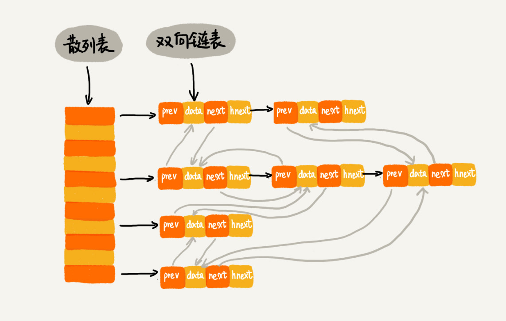</li>
</ol>
<ul>
<li>散列表+双向链表存储结构，时间复杂度O(1)。</li>
<li>查找：散列表中时间复杂度接近O(1)，找到数据后，迁移到双向链表尾部。</li>
<li>删除：借助散列表，在O(1)复杂度中找到要删除的结点，双向链表通过O(1)找到前驱结点。</li>
<li>插入：先查找这个数据是否在缓存中，如果在，迁移到双向链表尾部，如果不在，如果缓存满了，将双向链表头部结点删除，再将数据放在双向链表尾部，如果缓存没满，直接将数据放在双向链表尾部。</li>
</ul>
<ol start="2">
<li>Redis有序集合</li>
</ol>
<ul>
<li>散列表+跳表</li>
<li>按照分值将对象组织成跳表，在按键值构建一个散列表。</li>
</ul>
<ol start="3">
<li>Java LinkedHashMap</li>
</ol>
<h5 id="哈希算法"><a href="#哈希算法" class="headerlink" title="哈希算法"></a>哈希算法</h5><ol>
<li>要求：<ul>
<li>从哈希值不能反向推导出原始数据。</li>
<li>输入的数据不同，哈希值不同。</li>
<li>散列冲突概率很小。</li>
<li>执行效率要高。 </li>
</ul>
</li>
<li>应用：<ul>
<li>安全加密：MD5、SHA、DES、AES<br>  字典攻击：加盐</li>
<li>唯一标识：从图片二进制编码取某一些字节，进行加密，使用加密值代表这样图片的唯一标识</li>
<li>数据校验：文件切割，分别对各个文件求哈希值，用户下载完各个切割文件后，先校验哈希值是否一致，以检查文件是否被篡改/完整。</li>
<li>散列函数</li>
</ul>
</li>
<li>区块链：区块链是一块块区块组成的，每个区块分为两部分：区块头和区块体。区块头保存着[自己区块体]和[上一个区块头]的哈希值。因为这种链式关系和哈希值的唯一性，只要区块链上任意一个区块被修改过，后面所有区块保存的哈希值就不对了。区块链使用的是 SHA256 哈希算法，计算哈希值非常耗时，如果要篡改一个区块，就必须重新计算该区块后面所有的区块的哈希值，短时间内几乎不可能做到。</li>
</ol>
<h5 id="哈希算法在分布式系统中应用"><a href="#哈希算法在分布式系统中应用" class="headerlink" title="哈希算法在分布式系统中应用"></a>哈希算法在分布式系统中应用</h5><ol>
<li>负载均衡<ul>
<li>实现会话粘滞的负载均衡算法：通过哈希算法，将客户端ip/用户session id进行计算，将哈希值与服务器数量进行取模计算，得到的值就是服务器编号。</li>
</ul>
</li>
<li>数据分片<ul>
<li>数据量非常大的时候，将数据进行分片分开存储到n台服务器上，将数据进行哈希计算，取模，获得服务器编号。</li>
</ul>
</li>
<li>分布式存储<ul>
<li>分布式缓存：<a href="https://zh.wikipedia.org/wiki/一致哈希" target="_blank" rel="noopener">一致性哈希算法</a>，<a href="https://www.sohu.com/a/158141377_479559" target="_blank" rel="noopener">一致性算法图解</a><br>假设k台机器，数据范围[0~MAX]，分成m（m&gt;&gt;k)个区间，每个机器负责m/k个小区间。当有新机器加入的时候，将某几个小区间的数据从原来服务器迁移到新服务器中。</li>
</ul>
</li>
</ol>
<h4 id="二叉树"><a href="#二叉树" class="headerlink" title="二叉树"></a>二叉树</h4><ol>
<li>概念<br>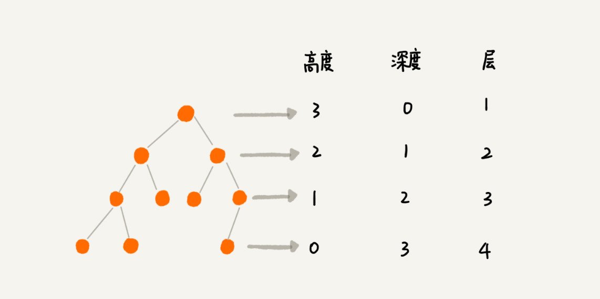<ul>
<li>节点的高度：结点到叶子结点的最长路径</li>
<li>节点的深度：根节点到这个结点所经历边的个数</li>
<li>节点的层级：结点的深度+1</li>
<li>树的高度：根节点的高度</li>
</ul>
</li>
</ol>
<p>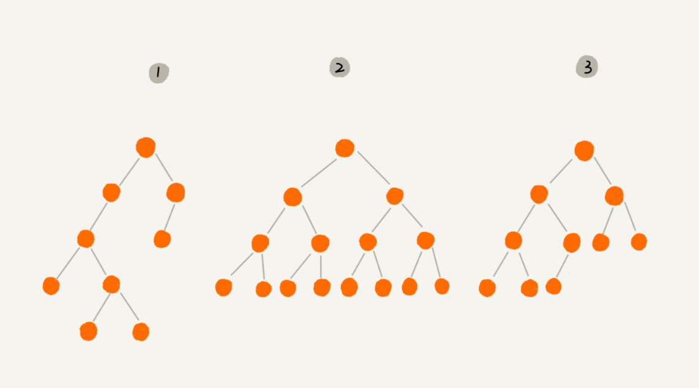</p>
<pre><code>- 满二叉树：编号2，叶子节点都在最底层，除叶子节点外，每个节点都有左右两个子节点。
- 完全二叉树：编号3，叶子节点都在最下层，最后一层的叶子节点都靠左排列，并且除了最后一层，其他层的节点个数都要达到最大。
</code></pre><ol start="2">
<li><p>存储二叉树</p>
<ul>
<li>链表存储法<br>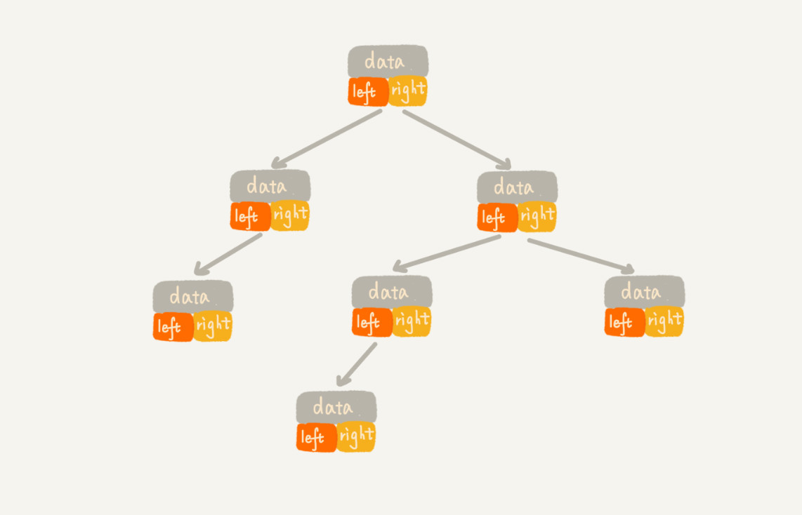</li>
<li>顺序存储法<br>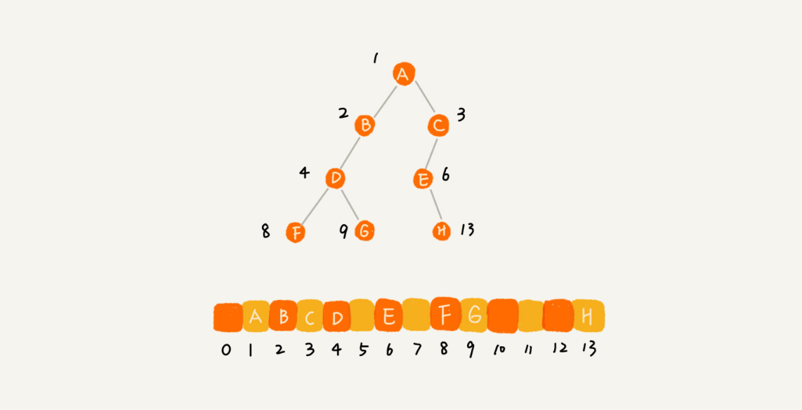<br>如果是完全二叉树，数组存储是最节省内存的方法。</li>
</ul>
</li>
<li><p>二叉树的遍历 O(n)<br>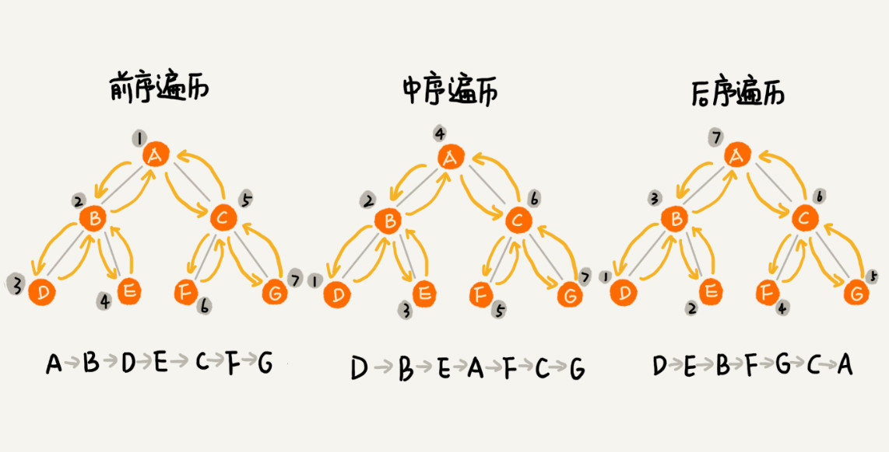</p>
<ul>
<li>前序遍历：对于树中的任意节点来说，先打印这个节点，然后再打印它的左子树，最后打印它的右子树。</li>
<li>中序遍历：对于树中的任意节点来说，先打印它的左子树，然后再打印它本身，最后打印它的右子树。</li>
<li>后序遍历：对于树中的任意节点来说，线打印它的左子树，然后打印右子树，最后打印它本身。</li>
<li>按层遍历<figure class="highlight plain"><table><tr><td class="gutter"><pre><span class="line">1</span><br><span class="line">2</span><br><span class="line">3</span><br><span class="line">4</span><br><span class="line">5</span><br><span class="line">6</span><br><span class="line">7</span><br><span class="line">8</span><br><span class="line">9</span><br><span class="line">10</span><br><span class="line">11</span><br><span class="line">12</span><br><span class="line">13</span><br><span class="line">14</span><br><span class="line">15</span><br><span class="line">16</span><br><span class="line">17</span><br><span class="line">18</span><br><span class="line">19</span><br><span class="line">20</span><br><span class="line">21</span><br><span class="line">22</span><br><span class="line">23</span><br></pre></td><td class="code"><pre><span class="line">// 前序遍历</span><br><span class="line">function preOrder(root) &#123;</span><br><span class="line">  if (root == null) return;</span><br><span class="line">  console.log(root.val) </span><br><span class="line">  preOrder(root-&gt;left);</span><br><span class="line">  preOrder(root-&gt;right);</span><br><span class="line">&#125;</span><br><span class="line"></span><br><span class="line">// 中序遍历</span><br><span class="line">function inOrder(root) &#123;</span><br><span class="line">  if (root == null) return;</span><br><span class="line">  inOrder(root-&gt;left);</span><br><span class="line">  console.log(root.val) </span><br><span class="line">  inOrder(root-&gt;right);</span><br><span class="line">&#125;</span><br><span class="line"></span><br><span class="line">// 后序遍历</span><br><span class="line">function postOrder(root) &#123;</span><br><span class="line">  if (root == null) return;</span><br><span class="line">  postOrder(root-&gt;left);</span><br><span class="line">  postOrder(root-&gt;right);</span><br><span class="line">  console.log(root.val) </span><br><span class="line">&#125;</span><br></pre></td></tr></table></figure>
</li>
</ul>
</li>
</ol>
<h5 id="二叉查找树-O-logn"><a href="#二叉查找树-O-logn" class="headerlink" title="二叉查找树 O(logn)"></a>二叉查找树 O(logn)</h5><ol>
<li>要求：对于树中任意一个节点，其左子树的值都要小与这个节点的值，右子树的值都要大于这个节点的值。<br> 平衡时间复杂度：O(logn)</li>
<li><p>二叉查找树的查找：</p>
<figure class="highlight plain"><table><tr><td class="gutter"><pre><span class="line">1</span><br><span class="line">2</span><br><span class="line">3</span><br><span class="line">4</span><br><span class="line">5</span><br><span class="line">6</span><br><span class="line">7</span><br><span class="line">8</span><br><span class="line">9</span><br><span class="line">10</span><br><span class="line">11</span><br><span class="line">12</span><br></pre></td><td class="code"><pre><span class="line">function treeSearch(tree,value)&#123;</span><br><span class="line">    if(tree.value === value)&#123;</span><br><span class="line">        return tree.value;</span><br><span class="line">    &#125;</span><br><span class="line">    else if(tree.value&lt;value &amp;&amp; tree.right)&#123;</span><br><span class="line">        return treeSearch(tree.right,value);</span><br><span class="line">    &#125;</span><br><span class="line">    else if(tree.value&gt;value &amp;&amp; tree.left)&#123;</span><br><span class="line">        return treeSearch(tree.left,value);</span><br><span class="line">    &#125;</span><br><span class="line">    return null;</span><br><span class="line">&#125;</span><br></pre></td></tr></table></figure>
</li>
<li><p>二叉树插入操作：</p>
<figure class="highlight plain"><table><tr><td class="gutter"><pre><span class="line">1</span><br><span class="line">2</span><br><span class="line">3</span><br><span class="line">4</span><br><span class="line">5</span><br><span class="line">6</span><br><span class="line">7</span><br><span class="line">8</span><br><span class="line">9</span><br><span class="line">10</span><br><span class="line">11</span><br><span class="line">12</span><br><span class="line">13</span><br><span class="line">14</span><br><span class="line">15</span><br><span class="line">16</span><br><span class="line">17</span><br><span class="line">18</span><br><span class="line">19</span><br><span class="line">20</span><br><span class="line">21</span><br><span class="line">22</span><br><span class="line">23</span><br></pre></td><td class="code"><pre><span class="line">// 假设插入的数据在叶子节点上</span><br><span class="line">function treeInsert(tree,value)&#123;</span><br><span class="line">    var p = tree;</span><br><span class="line">    while (p!=null)&#123;</span><br><span class="line">        if(p.value === value)&#123;</span><br><span class="line">            return &apos;repeat&apos;</span><br><span class="line">        &#125;</span><br><span class="line">        else if(p.value &lt; value)&#123;</span><br><span class="line">            if(!p.right)&#123;</span><br><span class="line">                p.right = &#123;value: value&#125;;</span><br><span class="line">                return;</span><br><span class="line">            &#125;</span><br><span class="line">            p = p.right;</span><br><span class="line">        &#125;</span><br><span class="line">        else if(p.value &gt; value)&#123;</span><br><span class="line">            if(!p.left)&#123;</span><br><span class="line">                p.left = &#123;value: value&#125;;</span><br><span class="line">                return;</span><br><span class="line">            &#125;</span><br><span class="line">            p = p.left;</span><br><span class="line">        &#125;</span><br><span class="line">    &#125;</span><br><span class="line">&#125;</span><br></pre></td></tr></table></figure>
</li>
<li><p>二叉树删除操作</p>
<ul>
<li>如果该节点没有子节点，删除该节点，并将父节点指向Null。</li>
<li>如果该节点有一个子节点，删除该节点，并将父节点指向子节点。</li>
<li>如果该节点有两个及以上子节点，删除该节点，并将右子树中最小节点替换到该位置。<figure class="highlight plain"><table><tr><td class="gutter"><pre><span class="line">1</span><br><span class="line">2</span><br><span class="line">3</span><br><span class="line">4</span><br><span class="line">5</span><br><span class="line">6</span><br><span class="line">7</span><br><span class="line">8</span><br><span class="line">9</span><br><span class="line">10</span><br><span class="line">11</span><br><span class="line">12</span><br><span class="line">13</span><br><span class="line">14</span><br><span class="line">15</span><br><span class="line">16</span><br><span class="line">17</span><br><span class="line">18</span><br><span class="line">19</span><br><span class="line">20</span><br><span class="line">21</span><br><span class="line">22</span><br><span class="line">23</span><br><span class="line">24</span><br><span class="line">25</span><br><span class="line">26</span><br><span class="line">27</span><br><span class="line">28</span><br><span class="line">29</span><br><span class="line">30</span><br><span class="line">31</span><br><span class="line">32</span><br><span class="line">33</span><br><span class="line">34</span><br><span class="line">35</span><br><span class="line">36</span><br><span class="line">37</span><br><span class="line">38</span><br><span class="line">39</span><br><span class="line">40</span><br><span class="line">41</span><br><span class="line">42</span><br><span class="line">43</span><br><span class="line">44</span><br><span class="line">45</span><br><span class="line">46</span><br><span class="line">47</span><br></pre></td><td class="code"><pre><span class="line">function treeDelete(tree,value)&#123;</span><br><span class="line">    var p = tree;</span><br><span class="line">    var pp = null; // 父节点</span><br><span class="line">    while (p!=null &amp;&amp; p.value!= value)&#123;</span><br><span class="line">        pp = p;</span><br><span class="line">        if(value &gt; p.value)&#123;</span><br><span class="line">            p = p.right;</span><br><span class="line">        &#125;else &#123;</span><br><span class="line">            p = p.left;</span><br><span class="line">        &#125;</span><br><span class="line">    &#125;</span><br><span class="line">    if( p == null)&#123;</span><br><span class="line">        return null;</span><br><span class="line">    &#125;</span><br><span class="line">    // 没有子节点</span><br><span class="line">    if(!p.left &amp;&amp; !p.right)&#123;</span><br><span class="line">        if(pp.right == p)&#123;</span><br><span class="line">            delete pp.right;</span><br><span class="line">        &#125;else &#123;</span><br><span class="line">            delete pp.left;</span><br><span class="line">        &#125;</span><br><span class="line">        return;</span><br><span class="line">    &#125;</span><br><span class="line">    // 有一个子节点</span><br><span class="line">    else if(!p.left || !p.right)&#123;</span><br><span class="line">        var child = p.left? p.left:p.right;</span><br><span class="line">        if(pp.right == p)&#123;</span><br><span class="line">            pp.right = child;</span><br><span class="line">        &#125;</span><br><span class="line">        else&#123;</span><br><span class="line">            pp.left = child;</span><br><span class="line">        &#125;</span><br><span class="line">        return;</span><br><span class="line">    &#125;</span><br><span class="line">    // 有两个及以上子节点</span><br><span class="line">    else&#123;</span><br><span class="line">        //找右子树中的最小值</span><br><span class="line">        minP = p.right; </span><br><span class="line">        minPP = p;</span><br><span class="line">        while(minP.left !=null)&#123;</span><br><span class="line">            minPP = minP;</span><br><span class="line">            minP = minP.left;</span><br><span class="line">        &#125;</span><br><span class="line">        p.value = minP.value;</span><br><span class="line">        delete minPP.left;</span><br><span class="line">    &#125;</span><br><span class="line">&#125;</span><br></pre></td></tr></table></figure>
</li>
</ul>
</li>
<li><p>快速查找最大、最小节点、前驱节点、后继结点</p>
</li>
<li>中序遍历查找二叉树，可以输出有序的数据，时间复杂度是O(n)</li>
<li>支持重复数据的二叉查找树：<ul>
<li>方法一：二叉查找树每个节点不止存储一个数据，存储一个链表，或者是动态扩容的数据。</li>
<li>方法二：每个节点只存储一个数据，如果重复，将这个值放在右子树，当作大于这个节点处理。查找时，查到值相同节点不停止查找，继续在右子树中查找，知道找到叶子节点。删除时，先找到所有节点，再按正常删除操作处理。</li>
</ul>
</li>
<li>与散列表对比：<ul>
<li>散列表数据是无序的，如需要有序的数据，先排列；二叉查找树只需要中序遍历，可以在O(n)时间复杂度内，输出有序的数据序列。</li>
<li>散列表扩容需要耗时比较久，遇到散列冲突时，性能不稳定；平衡二叉树的性能稳定，时间复杂度在O(logn)。</li>
<li>散列表查找操作时间时常数级，但因为哈希冲突存在，这个常量不一定比logn小，加上哈希函数的耗时。</li>
<li>散列表的构造比二叉查找树要复杂；平衡二叉查找树只需要考虑平衡性这一个问题。</li>
</ul>
</li>
</ol>
<h5 id="红黑树"><a href="#红黑树" class="headerlink" title="红黑树"></a>红黑树</h5><p>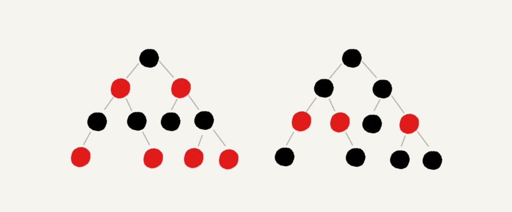<br>红黑树是一种性能非常稳定的平衡二叉树，它是为了解决普通二叉树在数据更新中，复杂度退化的问题产生的，红黑树的高度近似log2n，所以它是近似平衡，查找、插入、删除的时间复杂度都是O(logn)。</p>
<ol>
<li>要求<ul>
<li>根节点是黑色</li>
<li>每个叶子节点都是黑色空节点，也就是说叶子节点不存储数据</li>
<li>任何相邻节点不同时为红色，也就是说，红色节点是被黑色节点隔开</li>
<li>每个节点，从该节点到达其可达叶子节点所经过的所有路径，经过的黑色节点的数目相同</li>
</ul>
</li>
<li><p>实现</p>
<ul>
<li>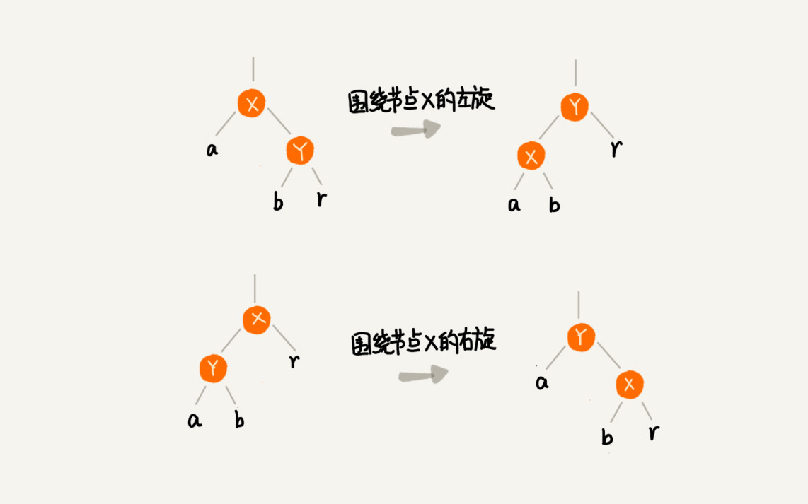<br>左旋：围绕某个节点的左旋<br>右旋：围绕某个节点的右旋</li>
</ul>
</li>
<li><p>插入</p>
<ul>
<li>插入操作的平衡调整：<br>  规定：插入的节点必须是红色的，而且二叉查找树中新插入的节点都是放在叶子节点上。<ol>
<li>如果插入节点的父节点是黑色的，那我们什么都不用做，它仍然满足红黑树的定义。</li>
<li>如果插入的节点是根节点，那我们直接改变它的颜色，把它变成黑色就可以了。</li>
<li>除此外的情况需要左右旋转、改变颜色来满足规定。</li>
</ol>
</li>
<li>case1: 如果关注节点是 a，它的叔叔节点 d 是红色<br>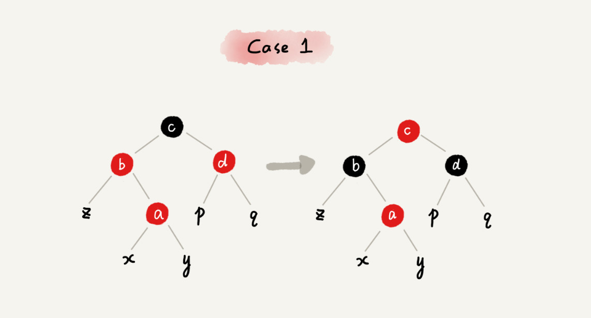<ol>
<li>将关注节点 a 的父节点 b、叔叔节点 d 的颜色都设置成黑色</li>
<li>将关注节点 a 的祖父节点 c 的颜色设置成红色；</li>
<li>关注节点变成 a 的祖父节点 c；</li>
<li>跳到 CASE 2 或者 CASE 3。</li>
</ol>
</li>
<li>case2: 如果关注节点是 a，它的叔叔节点 d 是黑色，关注节点 a是其父节点 b 的右子节点<br><ol>
<li>关注节点变成节点 a 的父节点 b；</li>
<li>围绕新的关注节点b 左旋；</li>
<li>跳到case3.</li>
</ol>
</li>
<li>case3: 如果关注节点是 a，它的叔叔节点d是黑色，关注节点a 是其父节点b的左子节点<br><ol>
<li>围绕关注节点 a 的祖父节点 c 右旋;</li>
<li>将关注节点 a 的父节点 b、兄弟节点 c 的颜色互换。</li>
<li>调整结束。</li>
</ol>
</li>
</ul>
</li>
<li>删除<ul>
<li>Step1: 针对删除节点初步调整，保证整个红黑树在删除这个节点后，依然满足“每个节点，从该节点到达其可达叶子节点所经过的所有路径，经过的黑色节点的数目相同”。<ol>
<li>case1: 如果要删除的节点是 a，它只有一个子节点 b<br><ul>
<li>删除节点 a，并且把节点 b 替换到节点 a 的位置</li>
<li>节点a只能是黑色，节点b只能是红色。在case1中，将节点b改成黑色。</li>
<li>不需要二次调整</li>
</ul>
</li>
<li>case2: 如果要删除的节点 a 有两个非空子节点，并且它的后继节点就是a的右子节点c<br><ul>
<li>如果节点 a 的后继节点就是右子节点 c，那右子节点 c 肯定没有左子树。我们把节点 a 删除，并且将节点 c 替换到节点a的位置。</li>
<li>把节点c 的颜色设置为节点a的颜色</li>
<li>如果节点c是黑色，为了不违反最后一条定义，给节点c的右子节点d增加一个黑色。</li>
<li>此时关注节点变成d ，进行二次调整。</li>
</ul>
</li>
<li>case3: 如果要删除的是节点 a，它有两个非空子节点，并且节点 a 的的后继节点不是右子节点<br><ul>
<li>找到后继节点 d，并将它删除，删除后继节点 d 的过程参照case1</li>
<li>将节点 a 替换成后继节点 d</li>
<li>把节点 d 的颜色设置为跟节点 a 相同的颜色</li>
<li>如果节点 d 是黑色，为了不违反红黑树的最后一条定义，我们给节点d的右子节点c多加一个黑色</li>
<li>此时关注节点变成c，进行二次调整。</li>
</ul>
</li>
</ol>
</li>
<li>Step2: 二次调整，以满足“即不存在相邻的两个红色节点“<ol>
<li>case1: 如果关注节点是 a，它的兄弟节点 c 是红色的<br><ul>
<li>围绕关注节点 a 的父节点 b 左旋</li>
<li>关注节点 a 的父节点 b 和祖父节点 c 交换颜色</li>
<li>关注节点不变</li>
<li>继续从四种情况中选择适合的规则来调整</li>
</ul>
</li>
<li>case2: 如果关注节点是 a，它的兄弟节点 c 是黑色的，并且节点 c的左右子节点 d、e 都是黑色的<br><ul>
<li>将关注节点 a 的兄弟节点 c 的颜色变成红色</li>
<li>从关注节点 a 中去掉一个黑色，这个时候节点 a 就是单纯的红色/黑色</li>
<li>给关注节点 a 的父节点b增加一个黑色</li>
<li>关注节点从 a 变成其父节点 b</li>
<li>继续从四种情况中选择适合的规则来调整</li>
</ul>
</li>
<li>case3: </li>
</ol>
</li>
</ul>
</li>
</ol>
<p>极客时间版权所有: <a href="https://time.geekbang.org/column/article/68976?code=dywldOC0YOf1iEE9qMZlHT8Yv8MdAXs9bSGuF1qs7mQ%3D" target="_blank" rel="noopener">https://time.geekbang.org/column/article/68976?code=dywldOC0YOf1iEE9qMZlHT8Yv8MdAXs9bSGuF1qs7mQ%3D</a></p>

      
    </div>
    
    
    

    

    

    

    <footer class="post-footer">
      
        <div class="post-tags">
          
            <a href="/blog/tags/算法/" rel="tag"># 算法</a>
          
        </div>
      

      
      
      

      
        <div class="post-nav">
          <div class="post-nav-next post-nav-item">
            
              <a href="/blog/2018/12/06/hmac加密算法/" rel="next" title="hmac加密算法">
                <i class="fa fa-chevron-left"></i> hmac加密算法
              </a>
            
          </div>

          <span class="post-nav-divider"></span>

          <div class="post-nav-prev post-nav-item">
            
              <a href="/blog/2018/12/19/数据结构与算法（二）/" rel="prev" title="数据结构与算法（二）">
                数据结构与算法（二） <i class="fa fa-chevron-right"></i>
              </a>
            
          </div>
        </div>
      

      
      
    </footer>
  </div>
  
  
  
  </article>


    <div class="post-spread">
      
    </div>
  </div>


          </div>
          


          

  


        </div>
        
          
  
  <div class="sidebar-toggle">
    <div class="sidebar-toggle-line-wrap">
      <span class="sidebar-toggle-line sidebar-toggle-line-first"></span>
      <span class="sidebar-toggle-line sidebar-toggle-line-middle"></span>
      <span class="sidebar-toggle-line sidebar-toggle-line-last"></span>
    </div>
  </div>

  <aside id="sidebar" class="sidebar">
    
    <div class="sidebar-inner">

      

      
        <ul class="sidebar-nav motion-element">
          <li class="sidebar-nav-toc sidebar-nav-active" data-target="post-toc-wrap">
            Table of Contents
          </li>
          <li class="sidebar-nav-overview" data-target="site-overview-wrap">
            Overview
          </li>
        </ul>
      

      <section class="site-overview-wrap sidebar-panel">
        <div class="site-overview">
          <div class="site-author motion-element" itemprop="author" itemscope="" itemtype="http://schema.org/Person">
            
              
            
              <p class="site-author-name" itemprop="name">Angel Teng</p>
              <p class="site-description motion-element" itemprop="description"></p>
          </div>

          <nav class="site-state motion-element">

            
              <div class="site-state-item site-state-posts">
              
                <a href="/blog/archives/">
              
                  <span class="site-state-item-count">89</span>
                  <span class="site-state-item-name">posts</span>
                </a>
              </div>
            

            
              
              
              <div class="site-state-item site-state-categories">
                <a href="/blog/category/index.html">
                  <span class="site-state-item-count">14</span>
                  <span class="site-state-item-name">categories</span>
                </a>
              </div>
            

            
              
              
              <div class="site-state-item site-state-tags">
                <a href="/blog/tags/index.html">
                  <span class="site-state-item-count">35</span>
                  <span class="site-state-item-name">tags</span>
                </a>
              </div>
            

          </nav>

          

          

          
          

          
          

          

        </div>
      </section>

      
      <!--noindex-->
        <section class="post-toc-wrap motion-element sidebar-panel sidebar-panel-active">
          <div class="post-toc">

            
              
            

            
              <div class="post-toc-content"><ol class="nav"><li class="nav-item nav-level-4"><a class="nav-link" href="#名词"><span class="nav-number">1.</span> <span class="nav-text">名词</span></a></li><li class="nav-item nav-level-4"><a class="nav-link" href="#时间复杂度分析"><span class="nav-number">2.</span> <span class="nav-text">时间复杂度分析</span></a></li><li class="nav-item nav-level-4"><a class="nav-link" href="#书单"><span class="nav-number">3.</span> <span class="nav-text">书单</span></a></li><li class="nav-item nav-level-4"><a class="nav-link" href="#数组"><span class="nav-number">4.</span> <span class="nav-text">数组</span></a></li><li class="nav-item nav-level-4"><a class="nav-link" href="#链表"><span class="nav-number">5.</span> <span class="nav-text">链表</span></a><ol class="nav-child"><li class="nav-item nav-level-5"><a class="nav-link" href="#链表数组性能对比"><span class="nav-number">5.1.</span> <span class="nav-text">链表数组性能对比</span></a></li><li class="nav-item nav-level-5"><a class="nav-link" href="#基于链表LRU缓存淘汰策略"><span class="nav-number">5.2.</span> <span class="nav-text">基于链表LRU缓存淘汰策略</span></a></li></ol></li><li class="nav-item nav-level-4"><a class="nav-link" href="#栈"><span class="nav-number">6.</span> <span class="nav-text">栈</span></a></li><li class="nav-item nav-level-4"><a class="nav-link" href="#队列"><span class="nav-number">7.</span> <span class="nav-text">队列</span></a></li><li class="nav-item nav-level-4"><a class="nav-link" href="#递归"><span class="nav-number">8.</span> <span class="nav-text">递归</span></a></li><li class="nav-item nav-level-4"><a class="nav-link" href="#排序"><span class="nav-number">9.</span> <span class="nav-text">排序</span></a><ol class="nav-child"><li class="nav-item nav-level-5"><a class="nav-link" href="#冒泡排序-O-n-2"><span class="nav-number">9.1.</span> <span class="nav-text">冒泡排序 O(n^2)</span></a></li><li class="nav-item nav-level-5"><a class="nav-link" href="#插入排序-O-n-2"><span class="nav-number">9.2.</span> <span class="nav-text">插入排序 O(n^2)</span></a></li><li class="nav-item nav-level-5"><a class="nav-link" href="#选择排序-O-n-2"><span class="nav-number">9.3.</span> <span class="nav-text">选择排序 O(n^2)</span></a></li><li class="nav-item nav-level-5"><a class="nav-link" href="#O-n-2-中优选插入排序"><span class="nav-number">9.4.</span> <span class="nav-text">O(n^2)中优选插入排序</span></a></li><li class="nav-item nav-level-5"><a class="nav-link" href="#归并排序-O-nlogn"><span class="nav-number">9.5.</span> <span class="nav-text">归并排序 O(nlogn)</span></a></li><li class="nav-item nav-level-5"><a class="nav-link" href="#快速排序-O-nlogn-O-n-2"><span class="nav-number">9.6.</span> <span class="nav-text">快速排序 O(nlogn)~O(n^2)</span></a></li><li class="nav-item nav-level-5"><a class="nav-link" href="#归并排序、快速排序对比"><span class="nav-number">9.7.</span> <span class="nav-text">归并排序、快速排序对比</span></a></li><li class="nav-item nav-level-5"><a class="nav-link" href="#桶排序-O-n"><span class="nav-number">9.8.</span> <span class="nav-text">桶排序 O(n)</span></a></li><li class="nav-item nav-level-5"><a class="nav-link" href="#计数排序-O-n"><span class="nav-number">9.9.</span> <span class="nav-text">计数排序 O(n)</span></a></li><li class="nav-item nav-level-5"><a class="nav-link" href="#基数排序-O-n"><span class="nav-number">9.10.</span> <span class="nav-text">基数排序 O(n)</span></a></li><li class="nav-item nav-level-5"><a class="nav-link" href="#排序优化"><span class="nav-number">9.11.</span> <span class="nav-text">排序优化</span></a></li></ol></li><li class="nav-item nav-level-4"><a class="nav-link" href="#二分查找-O-logn"><span class="nav-number">10.</span> <span class="nav-text">二分查找 O(logn)</span></a><ol class="nav-child"><li class="nav-item nav-level-5"><a class="nav-link" href="#二分查找变形"><span class="nav-number">10.1.</span> <span class="nav-text">二分查找变形</span></a></li></ol></li><li class="nav-item nav-level-4"><a class="nav-link" href="#跳表SkipList-O-logn"><span class="nav-number">11.</span> <span class="nav-text">跳表SkipList O(logn)</span></a></li><li class="nav-item nav-level-4"><a class="nav-link" href="#散列表HashTable-O-k"><span class="nav-number">12.</span> <span class="nav-text">散列表HashTable O(k)</span></a><ol class="nav-child"><li class="nav-item nav-level-5"><a class="nav-link" href="#工业级别散列表"><span class="nav-number">12.1.</span> <span class="nav-text">工业级别散列表</span></a></li><li class="nav-item nav-level-5"><a class="nav-link" href="#散列表与链表结合"><span class="nav-number">12.2.</span> <span class="nav-text">散列表与链表结合</span></a></li><li class="nav-item nav-level-5"><a class="nav-link" href="#哈希算法"><span class="nav-number">12.3.</span> <span class="nav-text">哈希算法</span></a></li><li class="nav-item nav-level-5"><a class="nav-link" href="#哈希算法在分布式系统中应用"><span class="nav-number">12.4.</span> <span class="nav-text">哈希算法在分布式系统中应用</span></a></li></ol></li><li class="nav-item nav-level-4"><a class="nav-link" href="#二叉树"><span class="nav-number">13.</span> <span class="nav-text">二叉树</span></a><ol class="nav-child"><li class="nav-item nav-level-5"><a class="nav-link" href="#二叉查找树-O-logn"><span class="nav-number">13.1.</span> <span class="nav-text">二叉查找树 O(logn)</span></a></li><li class="nav-item nav-level-5"><a class="nav-link" href="#红黑树"><span class="nav-number">13.2.</span> <span class="nav-text">红黑树</span></a></li></ol></li></ol></div>
            

          </div>
        </section>
      <!--/noindex-->
      

      

    </div>
  </aside>


        
      </div>
    </main>

    <footer id="footer" class="footer">
      <div class="footer-inner">
        <div class="copyright">&copy; <span itemprop="copyrightYear">2020</span>
  <span class="with-love">
    <i class="fa fa-user"></i>
  </span>
  <span class="author" itemprop="copyrightHolder">Angel Teng</span>

  
</div>


  <div class="powered-by">Powered by <a class="theme-link" target="_blank" href="https://hexo.io">Hexo</a></div>


  <span class="post-meta-divider">|</span>


  <div class="theme-info">Theme &mdash; <a class="theme-link" target="_blank" href="https://github.com/iissnan/hexo-theme-next">NexT.Muse</a> v5.1.4</div>


        


        
      </div>
    </footer>

    
      <div class="back-to-top">
        <i class="fa fa-arrow-up"></i>
        
      </div>
    

    

  </div>

  

<script type="text/javascript">
  if (Object.prototype.toString.call(window.Promise) !== '[object Function]') {
    window.Promise = null;
  }
</script>


  


  
  
    <script type="text/javascript" src="/blog/lib/jquery/index.js?v=2.1.3"></script>
  

  
  
    <script type="text/javascript" src="/blog/lib/fastclick/lib/fastclick.min.js?v=1.0.6"></script>
  

  
  
    <script type="text/javascript" src="/blog/lib/jquery_lazyload/jquery.lazyload.js?v=1.9.7"></script>
  

  
  
    <script type="text/javascript" src="/blog/lib/velocity/velocity.min.js?v=1.2.1"></script>
  

  
  
    <script type="text/javascript" src="/blog/lib/velocity/velocity.ui.min.js?v=1.2.1"></script>
  

  
  
    <script type="text/javascript" src="/blog/lib/fancybox/source/jquery.fancybox.pack.js?v=2.1.5"></script>
  


  


  <script type="text/javascript" src="/blog/js/src/utils.js?v=5.1.4"></script>

  <script type="text/javascript" src="/blog/js/src/motion.js?v=5.1.4"></script>


  
  

  
  <script type="text/javascript" src="/blog/js/src/scrollspy.js?v=5.1.4"></script>
<script type="text/javascript" src="/blog/js/src/post-details.js?v=5.1.4"></script>


  


  <script type="text/javascript" src="/blog/js/src/bootstrap.js?v=5.1.4"></script>


  


  


	


  


  


  


  

  

  

  
  

  
  
    <script type="text/x-mathjax-config">
      MathJax.Hub.Config({
        tex2jax: {
          inlineMath: [ ['$','$'], ["\\(","\\)"]  ],
          processEscapes: true,
          skipTags: ['script', 'noscript', 'style', 'textarea', 'pre', 'code']
        }
      });
    </script>

    <script type="text/x-mathjax-config">
      MathJax.Hub.Queue(function() {
        var all = MathJax.Hub.getAllJax(), i;
        for (i=0; i < all.length; i += 1) {
          all[i].SourceElement().parentNode.className += ' has-jax';
        }
      });
    </script>
    <script type="text/javascript" src="//cdn.bootcss.com/mathjax/2.7.1/latest.js?config=TeX-AMS-MML_HTMLorMML"></script><!-- hexo-inject:begin --><!-- hexo-inject:end -->
  


  

  

</body>
</html>
